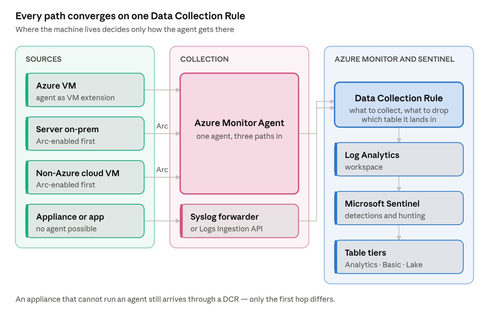
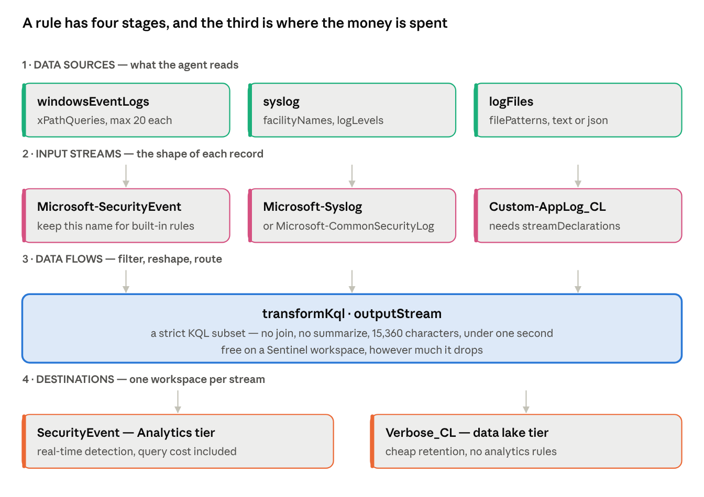
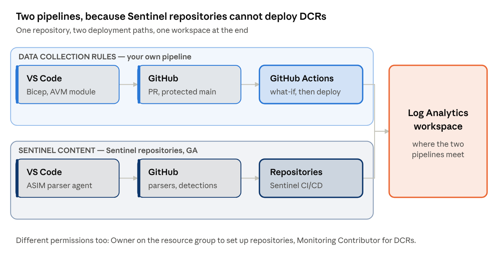
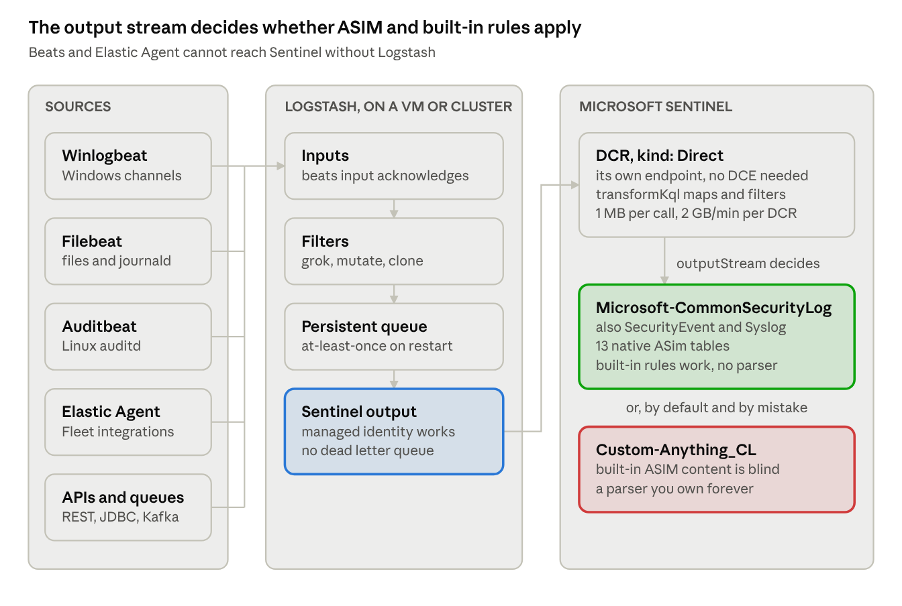
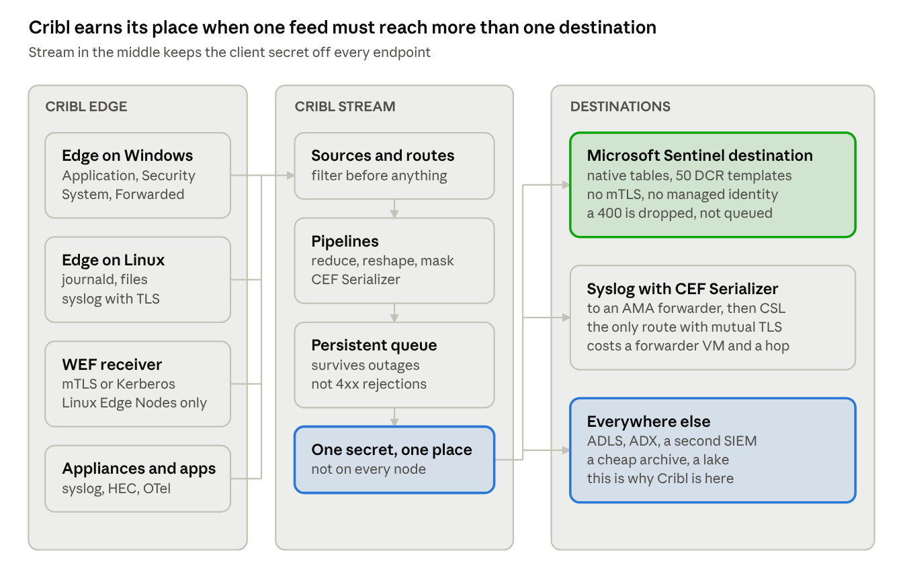

Security telemetry playbooks · 01
Onboarding security logs to Microsoft Sentinel
Every Windows and Linux log source reaching Microsoft Sentinel today goes through the same two objects — the Azure Monitor Agent and a Data Collection Rule — whether the machine sits in Azure, in your data centre, or in another cloud. This playbook covers the collection paths, the filtering and cost decisions, how to prove a source is actually complete, and how each setting maps to CIS, MCSB and DORA.
Choosing the collection path#

The only question that changes the design is whether the machine can run an agent. If it can, it runs the Azure Monitor Agent — directly on an Azure VM, or after Azure Arc projects an on-prem or other-cloud server into Azure as a resource. If it cannot, its logs reach a Linux forwarder running the agent, or arrive through the Logs Ingestion API.
Everything after that point is identical. The Data Collection Rule is where the real decisions live, and it is the object worth understanding before touching anything else.
The model: agent, rule, endpoint#
Installing the agent collects nothing. This is the most common cause of "the agent is healthy but no data arrives": the VM extension installs the agent and stops there, because a Data Collection Rule decides what is collected. Creating the DCR in the portal and adding the machine installs the agent and starts collection in one step, which is why that path is recommended.
The agent is AzureMonitorWindowsAgent or AzureMonitorLinuxAgent. The legacy Log Analytics agent (MMA) retired on 31 August 2024, and Microsoft's notice is blunter than most people realise: after 2 March 2026 data upload "can stop at any time without further notice." Any MMA still running is not a migration backlog item, it is a source that may already have stopped. The one exception is an agent connected exclusively to on-prem System Center Operations Manager.
A DCR has four stages — data sources, input streams, data flows, destinations — and these limits shape every design built on it:

| Limit | Value |
|---|---|
| Data sources per DCR | 10 |
| DCRs per machine | 30 |
| Machines per DCR | unlimited |
| Destination workspaces per stream, per DCR | 1 |
| DCR region | must match the destination workspace region |
So the working pattern is one DCR per log profile — windows-security-baseline, linux-syslog-baseline, sysmon-endpoints — associated to hundreds of machines through Azure Policy. The DCR can sit in a different subscription and resource group from the machines, as long as the tenant is the same.
Data Collection Endpoints are the exception, not the rule, and this is where older guidance misleads. A DCE is required only for Private Link, for any network sharing DNS with an Azure Monitor Private Link Scope, and for two specific sources: Windows Firewall logs and Prometheus metrics. Custom text and JSON logs no longer need one. Microsoft's own DCR samples page still shows dataCollectionEndpointId in its text-log example, which contradicts the DCE overview — expect that sample to be cited at you in a design review.
Windows: Application, Security and System#
The Windows Security Events connector is itself a DCR, and its presets are still the fastest defensible starting point:
| Preset | Scope |
|---|---|
| Minimal | 39 event IDs — account and group changes, process creation, policy change, AppLocker |
| Common | about 140 IDs — adds logon and logoff detail, Kerberos, directory service changes |
| All events | everything from the Security and AppLocker channels only |
| Custom | your own XPath |
Common is not a strict superset of Minimal: it adds 4634 (sign-out), which Minimal deliberately omits. All events covers the Security and AppLocker channels, so Application, System and Setup need their own data source.
The stream is Microsoft-SecurityEvent and the table is SecurityEvent. Keep that stream name if you hand-build the DCR, because most built-in analytics rules — including the near-real-time ones — query SecurityEvent and will not fire on anything else.
XPath is LogName!XPathQuery:
Security!*[System[(EventID=4648)]]
System!*[System[(Level=1 or Level=2 or Level=3) and (EventID != 6)]]
Security!*[System[(band(Keywords,13510798882111488)) and (EventID != 4624)]]
Test a query on the host before deploying it:
$XPath = '*[System[EventID=1035]]'
Get-WinEvent -LogName 'Application' -FilterXPath $XPath
Four constraints bite in practice. XPath 1.0 only. Get-WinEvent accepts 23 expressions but a DCR accepts 20, so a query that validates in PowerShell can still be rejected. starts-with and contains are not supported, while position, band and timediff are. And Analytic and Debug channels cannot be collected at all — the agent subscribes through the EvtSubscribe API, which Windows does not permit for those channel types.
Watch for double collection: a Sentinel connector and a separate DCR covering the same events on the same VM bills twice, as does a VM still running MMA alongside the Azure Monitor Agent.
Sysmon, and the table it lands in#
Sysmon writes to Microsoft-Windows-Sysmon/Operational. That is an Operational channel, so unlike Analytic and Debug it can be collected. The XPath is literal:
Microsoft-Windows-Sysmon/Operational!*
Narrow it in production — Microsoft-Windows-Sysmon/Operational!*[System[(EventID=1 or EventID=3 or EventID=11)]] for process creation, network connections and file creation.
The trap is the destination. Sysmon lands in WindowsEvent, not SecurityEvent and not Event. Most built-in Sentinel analytics rules query SecurityEvent and will never fire on Sysmon data. Teams discover this after the data is flowing and the detections are silent. Two fixes: install the ASIM Windows Event parsers and query through them, or rewrite the rule queries against WindowsEvent, which exposes a parsed EventData dynamic column plus RawEventData as fallback when parsing fails.
The same applies to Windows Event Forwarding. Forwarded Security-log events also land in WindowsEvent, never SecurityEvent, and the collector machine needs Windows Event Collector running with the agent installed on it.
One documentation inconsistency worth knowing before you hand-author anything: the DCR structure reference lists only Microsoft-Event for Windows event sources and never documents the stream that populates WindowsEvent. Generate the DCR through the Windows Forwarded Events connector in the portal, then read back its JSON and use that as your template.
Volume is the other consideration. EventID 3 (network connect) and 11 (file create) are high-rate, and WindowsEvent has no Basic plan support — though it does support the Auxiliary and data lake tiers.
Linux: syslog, and what the agent rewrites#
Linux collection filters on facility and severity. There are 24 facilities — kern, user, mail, daemon, auth, syslog, lpr, news, uucp, cron, authpriv, ftp, ntp, audit, alert, clock, local0 through local7 — and selecting a minimum severity collects that level and everything above it. For security monitoring, auth and authpriv are the baseline; audit carries auditd where it is configured to forward.
The agent rewrites the syslog daemon configuration on the host and restarts it. Know which files it owns before someone else edits them:
| Daemon | File |
|---|---|
| rsyslog, TCP | /etc/rsyslog.d/10-azuremonitoragent-omfwd.conf — forwards to 127.0.0.1:28330 |
| rsyslog, SELinux | /etc/rsyslog.d/10-azuremonitoragent.conf plus /etc/rsyslog.d/05-azuremonitoragent-loadomuxsock.conf |
| syslog-ng | /etc/syslog-ng/conf.d/azuremonitoragent-tcp.conf |
The portal lies about what you are collecting. The facility checkboxes in a DCR clear every time you reopen it and do not reflect the actual configuration. Always verify against the facilityNames property in the DCR JSON, not the UI.
Three more Linux-specific behaviours: semicolons are stripped during ingestion, so change them at source if they carry meaning; rsyslog inputs bound to a non-default ruleset are not forwarded to the agent at all; and a full disk stops the agent, so cap daemon-side retention on any host that also buffers locally.
Prerequisites that catch hardened builds: Python 2 or 3, the which and initscripts packages, and a system-wide crypto policy that is not FUTURE — check with sudo update-crypto-policies --show. Stripped-down custom distributions and locked appliances are unsupported. The agent creates a local azuremonitoragent account; do not remove it.
On-prem and other clouds#
Azure Arc projects a server into Azure as a resource with a full ARM resource ID, after which it behaves like an Azure VM for collection purposes: install the agent as an extension, associate DCRs, done. The agent is the Azure Connected Machine agent (azcmagent), it heartbeats every five minutes, and Arc itself costs nothing.
Onboarding at scale: service principal for non-interactive deployment, Group Policy for Windows estates, Ansible, Configuration Manager, Arc-enabled VMware vSphere, or the multicloud connector for AWS EC2.
Two constraints: the installer refuses to run on an Azure VM and rolls back, and the agent cannot be installed on a cloned machine that already has it — use Policy or infrastructure-as-code after cloning.
One side effect worth flagging to the server owners before you start. Arc-connecting a machine with SQL Server installed automatically connects the SQL instances to Arc, deploying an extension and applying new roles to the instances and their databases. Opt out with the tag ArcSQLServerExtensionDeployment set to Disabled at connect time.
Appliances that cannot run an agent#
A dedicated Linux forwarder running the agent plus rsyslog or syslog-ng. Appliances send to port 514, the daemon hands off to the agent on TCP 28330, and the agent ships to the workspace. Syslog lands in Syslog, CEF in CommonSecurityLog.
Microsoft publishes no sizing numbers for the forwarder — the documentation defers entirely to the agent performance benchmark, so any capacity figure in your design has to be your own measurement.
The standard design error here is duplicate ingestion: using the same facility for both Syslog and CEF bills the same events into both tables. Change the facility at source where you can. Where you cannot, filter in the DCR — and use both conditions, because from agent version 1.41 ProcessName became unreliable for vendors that do not follow RFC 3164 or 5424 headers:
source | where ProcessName !contains "CEF" and SyslogMessage !contains "CEF:0"
Logstash#
Still supported, currently v2.5.0, and it writes through the Logs Ingestion API with a DCE and DCR rather than the retired HTTP Data Collector API. Note that DCR-based ingestion through the plugin is public preview with no SLA, and that the older connect-logstash article is explicitly deprecated — the two are easy to confuse.
Worked configurations#
These are the three DCRs that cover most of an estate. Deploy them as JSON, not through the portal, for the reason in the traps list.
Windows security events#
The stream must stay Microsoft-SecurityEvent for built-in analytics rules to work. xPathQueries here is the Minimal preset expressed explicitly, so you can see and version what you are collecting rather than trusting a dropdown.
{
"location": "westeurope",
"kind": "Windows",
"properties": {
"dataSources": {
"windowsEventLogs": [
{
"name": "securityBaseline",
"streams": [ "Microsoft-SecurityEvent" ],
"xPathQueries": [
"Security!*[System[(EventID=1102 or EventID=4624 or EventID=4625 or EventID=4657 or EventID=4663 or EventID=4688)]]",
"Security!*[System[(EventID=4700 or EventID=4702 or EventID=4719 or EventID=4720 or EventID=4722 or EventID=4723)]]",
"Security!*[System[(EventID=4724 or EventID=4727 or EventID=4728 or EventID=4732 or EventID=4735 or EventID=4737)]]",
"Security!*[System[(EventID=4739 or EventID=4740 or EventID=4754 or EventID=4755 or EventID=4756 or EventID=4767)]]",
"Security!*[System[(EventID=4799 or EventID=4825 or EventID=4946 or EventID=4948 or EventID=4956 or EventID=5024)]]",
"Security!*[System[(EventID=5033 or EventID=8222)]]",
"Microsoft-Windows-AppLocker/EXE and DLL!*[System[(EventID >= 8001 and EventID <= 8007)]]"
]
}
]
},
"destinations": {
"logAnalytics": [
{
"name": "sentinelWorkspace",
"workspaceResourceId": "/subscriptions/<sub>/resourceGroups/<rg>/providers/Microsoft.OperationalInsights/workspaces/<ws>"
}
]
},
"dataFlows": [
{
"streams": [ "Microsoft-SecurityEvent" ],
"destinations": [ "sentinelWorkspace" ],
"outputStream": "Microsoft-SecurityEvent"
}
]
}
}
Split across several xPathQueries entries deliberately: each entry counts its own expressions against the limit of 20, so one query holding forty event IDs is rejected while six short ones are not.
Sysmon and other operational channels#
Separate DCR, because this lands in WindowsEvent and carries different volume. Scope it to the event IDs you have detections for — 1, 3, 7, 8, 10, 11, 22 is a defensible starting set.
{
"location": "westeurope",
"kind": "Windows",
"properties": {
"dataSources": {
"windowsEventLogs": [
{
"name": "sysmonOperational",
"streams": [ "Microsoft-Event" ],
"xPathQueries": [
"Microsoft-Windows-Sysmon/Operational!*[System[(EventID=1 or EventID=3 or EventID=7 or EventID=8)]]",
"Microsoft-Windows-Sysmon/Operational!*[System[(EventID=10 or EventID=11 or EventID=22)]]",
"Microsoft-Windows-PowerShell/Operational!*[System[(EventID=4103 or EventID=4104)]]",
"Application!*[System[(Level=1 or Level=2 or Level=3)]]",
"System!*[System[(Level=1 or Level=2 or Level=3)]]"
]
}
]
},
"destinations": {
"logAnalytics": [
{
"name": "sentinelWorkspace",
"workspaceResourceId": "/subscriptions/<sub>/resourceGroups/<rg>/providers/Microsoft.OperationalInsights/workspaces/<ws>"
}
]
},
"dataFlows": [
{
"streams": [ "Microsoft-Event" ],
"destinations": [ "sentinelWorkspace" ],
"transformKql": "source | where not(Provider == 'Microsoft-Windows-Sysmon' and EventID == 3 and isnotempty(EventData) and tostring(parse_xml(RawEventData)) has '127.0.0.1')",
"outputStream": "Microsoft-WindowsEvent"
}
]
}
}
Generate this one through the Windows Forwarded Events connector first and read back its JSON — the Microsoft-WindowsEvent output stream is not documented on the DCR structure reference, so take it from a rule Microsoft generated rather than from a blog, this one included.
Linux syslog#
{
"location": "westeurope",
"kind": "Linux",
"properties": {
"dataSources": {
"syslog": [
{
"name": "authBaseline",
"streams": [ "Microsoft-Syslog" ],
"facilityNames": [ "auth", "authpriv" ],
"logLevels": [ "Info", "Notice", "Warning", "Error", "Critical", "Alert", "Emergency" ]
},
{
"name": "systemBaseline",
"streams": [ "Microsoft-Syslog" ],
"facilityNames": [ "daemon", "cron", "kern", "syslog" ],
"logLevels": [ "Warning", "Error", "Critical", "Alert", "Emergency" ]
}
]
},
"destinations": {
"logAnalytics": [
{
"name": "sentinelWorkspace",
"workspaceResourceId": "/subscriptions/<sub>/resourceGroups/<rg>/providers/Microsoft.OperationalInsights/workspaces/<ws>"
}
]
},
"dataFlows": [
{
"streams": [ "Microsoft-Syslog" ],
"destinations": [ "sentinelWorkspace" ],
"transformKql": "source | where not(SyslogMessage has_any ('CRON[', 'session opened for user root by (uid=0)'))",
"outputStream": "Microsoft-Syslog"
}
]
}
}
Two data sources in one DCR because auth and authpriv are worth collecting at Info and above, while the operational facilities are not. Note the count against the limit of 10 data sources per DCR.
Deploying and associating#
az monitor data-collection rule create \
--resource-group rg-sentinel \
--name dcr-windows-security-baseline \
--location westeurope \
--rule-file ./dcr-windows-security-baseline.json
# Azure VM
az monitor data-collection rule association create \
--name dcra-windows-security \
--rule-id "/subscriptions/<sub>/resourceGroups/rg-sentinel/providers/Microsoft.Insights/dataCollectionRules/dcr-windows-security-baseline" \
--resource "/subscriptions/<sub>/resourceGroups/<rg>/providers/Microsoft.Compute/virtualMachines/<vm>"
# Arc-enabled server — same call, different resource provider
az monitor data-collection rule association create \
--name dcra-windows-security \
--rule-id "/subscriptions/<sub>/resourceGroups/rg-sentinel/providers/Microsoft.Insights/dataCollectionRules/dcr-windows-security-baseline" \
--resource "/subscriptions/<sub>/resourceGroups/<rg>/providers/Microsoft.HybridCompute/machines/<server>"
The syslog and CEF forwarder#
# on the forwarder, after the DCR exists and targets it
sudo wget -O Forwarder_AMA_installer.py \
https://raw.githubusercontent.com/Azure/Azure-Sentinel/master/DataConnectors/Syslog/Forwarder_AMA_installer.py
sudo python3 Forwarder_AMA_installer.py
# verify both hops
sudo systemctl status azuremonitoragent.service
sudo systemctl status rsyslog.service
netstat -lnptv | grep -E '514|28330'
# end-to-end test
sudo tcpdump -i any port 514 or 28330 -A -vv &
logger -p local4.warn -P 514 -n 127.0.0.1 --rfc3164 -t CEF \
"0|Mock-test|MOCK|common=event-format-test|end|TRAFFIC|rt=$common=event-formatted-receive_time"
CommonSecurityLog
| where TimeGenerated > ago(1d)
| where DeviceProduct == "MOCK"
Allow up to twenty minutes. The installer opens 514 on both UDP and TCP and does not configure TLS — that is manual daemon work if the sources require it.
At scale: Azure Policy#
Onboarding by hand does not survive contact with a real estate. Azure Policy is the documented approach, and the built-in initiatives bundle three things: optional identity creation, the agent extension bound to that identity, and the DCR association via the Data Collection Rule Resource Id parameter.
The identity model differs by resource type, and getting it wrong is a silent failure:
| Resource | Identity |
|---|---|
| Azure VMs and scale sets | user-assigned managed identity (recommended) |
| Arc-enabled servers | system-assigned managed identity — the only supported option |
Policies apply automatically to new machines. Existing machines need a remediation task, which people forget and then wonder why half the estate is dark.
Two known issues to design around. There is a race condition in the built-in identity creation. And if the policy assignment is scoped to a resource group rather than a subscription, you must grant the assignment identity the required roles manually first, or deployments fail. Non-standard images need the Additional Virtual Machine Images parameter set.
Assigning the built-in initiative, with remediation for machines that already exist:
# user-assigned identity for Azure VMs
az identity create --resource-group rg-sentinel --name id-ama
az policy assignment create \
--name ama-windows-dcr \
--scope "/subscriptions/<sub>" \
--policy-set-definition "<initiative-definition-id>" \
--mi-system-assigned --location westeurope \
--params '{
"dcrResourceId": { "value": "/subscriptions/<sub>/resourceGroups/rg-sentinel/providers/Microsoft.Insights/dataCollectionRules/dcr-windows-security-baseline" },
"bringYourOwnUserAssignedManagedIdentity": { "value": true },
"userAssignedIdentityResourceId": { "value": "/subscriptions/<sub>/resourceGroups/rg-sentinel/providers/Microsoft.ManagedIdentity/userAssignedIdentities/id-ama" }
}'
# existing machines are not touched until you remediate
az policy remediation create \
--name remediate-ama-windows \
--policy-assignment ama-windows-dcr \
--resource-discovery-mode ReEvaluateCompliance
Find what the policy has not reached yet — the gap between assets and agents, which is the number your risk register actually cares about:
az graph query -q "
Resources
| where type in~ ('microsoft.compute/virtualmachines','microsoft.hybridcompute/machines')
| extend osType = tostring(properties.storageProfile.osDisk.osType)
| project id, name, type, osType, resourceGroup, subscriptionId
| join kind=leftouter (
Resources
| where type =~ 'microsoft.compute/virtualmachines/extensions'
or type =~ 'microsoft.hybridcompute/machines/extensions'
| where name in~ ('AzureMonitorWindowsAgent','AzureMonitorLinuxAgent')
| extend id = tolower(substring(id, 0, indexof(id, '/extensions/')))
| project id, agent = name
) on id
| where isempty(agent)
| project name, type, osType, resourceGroup"
For onboarding governance, this is also where the risk register meets the technical work: a source that cannot be onboarded on schedule — an application that does not emit the events, a vendor appliance with no usable export — is a monitoring coverage gap with a business impact, and belongs in the issue and deviation process with a compensating control and a review date, not in a backlog nobody reads.
Developing and deploying this as code#
Start from the constraint that surprises everyone: Sentinel Repositories cannot deploy Data Collection Rules. The supported content list is closed — analytics rules, automation rules, hunting queries, parsers, playbooks, workbooks, and custom detection rules in preview. DCRs, DCEs, data connectors and watchlists are absent, and arbitrary ARM templates are rejected because each file must match one of those schemas.
So you run two pipelines, not one:
| Sentinel content | Data Collection Rules | |
|---|---|---|
| Mechanism | Sentinel Repositories (GA since March 2026) | your own GitHub Actions workflow |
| Permission to set up | Owner on the workspace resource group, home tenant only | pipeline identity with Monitoring Contributor |
| Format | Bicep (preferred) or ARM JSON | Bicep via AVM, ARM JSON, or Terraform |
| Generated workflow | .github/workflows/sentinel-deploy-<id>.yml |
yours |
| Config file | sentinel-deployment.config at repo root, hand-created |
n/a |
| Limit | 5 repositories per workspace | no documented cap |
Do not design a single unified pipeline and then discover this at build time.

Repository layout#
.
├─ .github/
│ ├─ workflows/
│ │ ├─ dcr-validate.yml # what-if on PR
│ │ ├─ dcr-deploy.yml # deploy on merge to main
│ │ └─ sentinel-deploy-<id>.yml # generated by Sentinel Repositories
│ └─ skills/ # ASIM parser agent skills, from Azure-Sentinel
├─ dcr/
│ ├─ modules/
│ │ └─ dcr.bicep # thin wrapper over the AVM module
│ ├─ windows-security-baseline.bicep
│ ├─ windows-security-baseline.bicepparam
│ ├─ sysmon-endpoints.bicep
│ └─ linux-syslog-baseline.bicep
├─ parsers/ # ASIM parsers — deployed by Sentinel Repositories
├─ detections/ # analytics rules — same
├─ schemas/
│ └─ Microsoft.Insights.2024-03-11.json # vendored, see below
├─ tests/
│ ├─ Dcr.Schema.Tests.ps1
│ └─ Dcr.Semantics.Tests.ps1
└─ sentinel-deployment.config
The DCR module#
Use the Azure Verified Module rather than hand-rolling the resource — avm/res/insights/data-collection-rule, currently 0.11.0, on API version 2024-03-11.
targetScope = 'resourceGroup'
param workspaceResourceId string
param location string = resourceGroup().location
module dcrWindowsSecurity 'br/public:avm/res/insights/data-collection-rule:0.11.0' = {
name: 'dcr-windows-security-baseline'
params: {
name: 'dcr-windows-security-baseline'
location: location
dataCollectionRuleProperties: {
kind: 'Windows'
dataSources: {
windowsEventLogs: [
{
name: 'securityBaseline'
streams: [ 'Microsoft-SecurityEvent' ]
xPathQueries: loadJsonContent('./xpath/security-minimal.json')
}
]
}
destinations: {
logAnalytics: [
{ name: 'sentinelWorkspace', workspaceResourceId: workspaceResourceId }
]
}
dataFlows: [
{
streams: [ 'Microsoft-SecurityEvent' ]
destinations: [ 'sentinelWorkspace' ]
outputStream: 'Microsoft-SecurityEvent'
}
]
}
}
}
loadJsonContent keeps the XPath set in its own reviewable file, which is what you want when a detection engineer asks for one more event ID.
Pin the API version explicitly wherever you write raw ARM. The CLI documentation, the Sentinel DCR API reference, the template reference and the AVM module are on three different versions between them, and inheriting whichever one a sample happened to use is how a transformation silently fails to deploy. Multi-stage transformations needs 2025-05-11 or later and is preview.
The pipeline#
Authenticate with OIDC federated credentials — no client secret in the repo:
name: Validate DCRs
on:
pull_request:
paths: [ 'dcr/**' ]
permissions:
id-token: write
contents: read
pull-requests: write
jobs:
whatif:
runs-on: ubuntu-latest
environment: sentinel-prod
steps:
- uses: actions/checkout@v4
- name: Schema and semantic checks
shell: pwsh
run: |
Install-Module Pester -Force -Scope CurrentUser
Invoke-Pester ./tests -Output Detailed -CI
- uses: azure/login@v2
with:
client-id: ${{ secrets.AZURE_CLIENT_ID }}
tenant-id: ${{ secrets.AZURE_TENANT_ID }}
subscription-id: ${{ secrets.AZURE_SUBSCRIPTION_ID }}
- uses: azure/bicep-deploy@v2
with:
type: deployment
operation: whatIf
name: dcr-${{ github.run_id }}
scope: resourceGroup
subscription-id: ${{ secrets.AZURE_SUBSCRIPTION_ID }}
resource-group-name: rg-sentinel
template-file: ./dcr/windows-security-baseline.bicep
parameters-file: ./dcr/windows-security-baseline.bicepparam
On merge, the same job runs with operation: create, gated behind a GitHub Environment with required reviewers. Note that azure/arm-deploy has a deprecation announced and azure/bicep-deploy@v2 is its replacement, handling both Bicep and ARM plus deployment stacks.
What you can actually validate in CI#
JSON schema. Published ARM schemas exist in the Azure/azure-resource-manager-schemas repo and contain definitions for dataCollectionRules, dataCollectionRuleAssociations and dataCollectionEndpoints. Vendor the file into your repo — the hosted schema.management.azure.com endpoint returns BlobNotFound for the 2023-03-11 and 2024-03-11 versions. There is no schema for 2025-05-11, so multi-stage transformations cannot be schema-validated today.
Semantic rules you have to write yourself. Nothing off the shelf covers these, and each one maps to a documented limit:
Describe 'DCR semantics' {
BeforeAll { $dcrs = Get-ChildItem ./dcr -Filter *.json -Recurse | ForEach-Object {
[pscustomobject]@{ Name = $_.Name; Json = Get-Content $_ -Raw | ConvertFrom-Json } } }
It '<Name> declares a supported kind' -ForEach $dcrs {
$Json.kind | Should -BeIn @('Direct','AgentSettings','Linux','PlatformTelemetry','Windows','WorkspaceTransforms')
}
It '<Name> has at most 10 data sources' -ForEach $dcrs {
($Json.properties.dataSources.PSObject.Properties.Value | Measure-Object).Count | Should -BeLessOrEqual 10
}
It '<Name> keeps every transformation under 15360 characters' -ForEach $dcrs {
foreach ($flow in $Json.properties.dataFlows) {
if ($flow.transformKql) { $flow.transformKql.Length | Should -BeLessThan 15360 }
}
}
It '<Name> never sets transform and transformKql on one data flow' -ForEach $dcrs {
foreach ($flow in $Json.properties.dataFlows) {
($flow.transform -and $flow.transformKql) | Should -BeFalse
}
}
It '<Name> uses only Microsoft- or Custom- stream prefixes' -ForEach $dcrs {
foreach ($flow in $Json.properties.dataFlows) {
foreach ($s in $flow.streams) { $s | Should -Match '^(Microsoft|Custom)-' }
}
}
}
Add checks for 20 data flows, 20 streams, 10 workspaces, 20 syslog facilities and 100 XPath queries per DCR, and assert apiVersion is at least 2025-05-11 wherever transformations appears.
KQL linting. Build on the Microsoft.Azure.Kusto.Language NuGet package, or lift the two xUnit projects from the Azure/Azure-Sentinel repo — Kqlvalidations.Tests performs offline semantic validation against known table schemas, and DetectionTemplateSchemaValidation.Tests validates rule YAML. Then layer a transformation allow-list on top, because the generic parser accepts join and summarize that a DCR will reject.
Testing a transformation is the real gap. There is no validate or dry-run operation on the DCR REST API — six CRUD operations and nothing else. The only scriptable approach is a datatable of sample rows run through az monitor log-analytics query, with the datatable block stripped before deployment:
let source = datatable (TimeGenerated:datetime, SyslogMessage:string, ProcessName:string)
[
datetime(2026-10-13T08:00:00Z), "CEF:0|Vendor|Product|1.0|100|Login|3|src=10.0.0.1", "CEF",
datetime(2026-10-13T08:00:01Z), "Accepted password for alice from 10.0.0.2", "sshd"
];
source | where ProcessName !contains "CEF" and SyslogMessage !contains "CEF:0"
Remember transformation KQL is a strict subset: no join, no summarize, sources limited to source and print, parse kind=regex must match the entire input string, and names differ from full KQL (replace not replace_string, columnifexists not column_ifexists). Target under one second; above twenty seconds you lose data.
Guardrails, in order of strength#
- RBAC is the primary control, not branch protection. A protected branch does nothing about someone editing a DCR in the portal and destroying its transformation. Remove Monitoring Contributor from humans on DCR-bearing resource groups and grant it only to the pipeline identity. Everything else on this list is secondary to that.
- Deployment stacks with
denySettingsMode: DenyWriteAndDelete— a genuine control-plane deny on out-of-band writes, deployable throughazure/bicep-deploywithtype: deploymentStack. Caveats: control-plane only, maximum five excluded principals with no error if you exceed it, and no drift detection of its own. - Drift detection you build. No first-party tool exists. A scheduled job that runs
az monitor data-collection rule showper DCR, normalises the JSON and diffs it against the repo, alerting on mismatch. - Runtime canaries. The
DCRLogErrorstable, plus the Logs Transformation Duration per Min and Logs Transformation Errors per Min metrics. These catch what CI cannot, because the transformation only truly executes in production.
One negative finding worth stating plainly in any design review: Microsoft publishes no reference repository for DCR-as-code and no GitHub Actions samples for Sentinel or DCR deployment. The AVM module's own end-to-end test folder is the closest thing to a maintained worked example. PSRule for Azure has no Azure.DCR.* rules at all.
Fields: normalising what you collect#
Collection gets events into a table. It does not make them queryable alongside anything else, and that is where most onboarding programmes stall — every new source becomes a bespoke parser and every detection has to be rewritten per product.
First, untangle three layers that get used interchangeably and are not the same thing. Windows events are not CEF. The agent reads the Windows Event Log through the EvtSubscribe API and ships structured records whose fields are already separate. CEF is a wire format that appliances emit over syslog because it is the only export they have, and it lands parsed into CommonSecurityLog. ASIM is neither — it is a query-time view, a KQL function that presents native columns under normalised names. SecurityEvent never becomes ASIM; _Im_Authentication reads it and renames on the way out, which is why you can fix a parser without re-onboarding anything.
| Layer | Windows server | Firewall appliance |
|---|---|---|
| Wire format | native Windows events | CEF over syslog |
| Table | SecurityEvent, WindowsEvent |
CommonSecurityLog |
| Query-time view | ASIM parser | ASIM parser |
Two schemas matter, and they are complementary rather than competing:
| ASIM | OCSF | |
|---|---|---|
| Owner | Microsoft, inside Sentinel | open, vendor-neutral |
| Applied | at query time, through parsers | at the producer, as the event format |
| Buys you | one detection works across sources | one schema contract across tools and SIEMs |
| Use it when | writing detections in Sentinel | the estate spans more than one platform, or you are fixing the format at the source |
The decision rule: normalise to ASIM for detection, express to OCSF at the boundary.
Inside Sentinel, ASIM wins by default and it is not close. The built-in analytics rules, the hunting queries and the parser agent all speak it; normalise to OCSF instead and you have built something correct that Sentinel's own content cannot consume, turning every detection into bespoke work. At the boundary — a data producer you are specifying a format with, an estate that spans more than one SIEM, data headed for a lake that other tools read, or a contract meant to outlive the vendor relationship — OCSF is the durable choice. Map ASIM to OCSF on the way out rather than choosing one.
That argument got stronger recently: ITU member states backed OCSF for ratification in December 2025, with official ratification targeted for June 2026. "On track to become an ITU standard" is a materially different proposition in a regulated procurement conversation than "our SIEM vendor's normalisation layer".
OCSF's extensibility runs through profiles — attribute sets that decorate any class rather than new classes of their own. Two are worth knowing before you write a schema standard. Record Integrity carries tamper-evidence on the event itself, which is how you evidence the log-corruption control in DORA Article 9(4)(d) rather than merely asserting it. And AI Operation, added in OCSF v1.8.0 on 16 March 2026 with its ai_model and message_context objects, gives native coverage of AI workloads including token usage and role-based interaction tracking.
That last one inverts the rule above, and it is the hinge into Part 2. For AI and agentic telemetry, ASIM's Agent Event schema is v0.1.0 and Sentinel-only, while OCSF has a shipping profile that attaches to any class and pairs with the OWASP Agent Observability Standard. There, OCSF is the foundation and ASIM is the Sentinel-side projection of it — the reverse of the Windows and Linux case.
A normalised source means a detection is written once. The key fields in a typical authentication event, and where they come from:
| ASIM field | Windows SecurityEvent |
Linux Syslog (sshd) |
|---|---|---|
EventType — Logon, Logoff, Elevate |
derived from EventID: 4624 → Logon, 4634 → Logoff, 4672 → Elevate | derived from the message verb |
EventResult |
4624 Success, 4625 Failure | "Accepted" or "Failed" in the message |
EventResultDetails |
mapped from SubStatus — 0xC000006A → Incorrect password, 0xC0000064 → No such user, 0xC0000234 → User locked |
"Invalid user", "Failed password" |
EventSchema / EventSchemaVersion |
Authentication / 1.0.0 |
same — both mandatory |
EventProduct / EventVendor |
Security Events / Microsoft | sshd / OpenBSD |
EventCount, EventStartTime, EventEndTime |
1, TimeGenerated |
1, TimeGenerated |
TargetUsername + TargetUsernameType |
TargetUserName, Windows or UPN |
parsed from for user <x>, Simple |
TargetUserId + TargetUserIdType |
TargetUserSid, SID |
uid where present |
TargetUserType |
derived — Member, Guest, Machine from the name pattern |
derived |
TargetDomain, TargetHostname |
TargetDomainName, Computer |
Computer |
ActorUsername + ActorUsernameType |
SubjectUserName where it differs from the target |
the invoking user on sudo |
ActorUserId |
SubjectUserSid |
uid |
TargetSessionId |
TargetLogonId |
session id where logged |
SrcIpAddr |
IpAddress |
parsed from from <ip> |
SrcHostname, SrcDvcId |
WorkstationName |
rarely present |
LogonMethod |
AuthenticationPackageName — NTLM, Kerberos, Negotiate |
publickey or password |
LogonProtocol |
LmPackageName |
ssh |
ActingAppName |
ProcessName |
ProcessName |
Dvc, DvcHostname, DvcIpAddr |
Computer |
Computer |
That is one schema of roughly a dozen, and an abridged view of it — the full Authentication schema also defines conditional type fields, scope fields (ActorScope, TargetUserScope) for the Entra tenant, entity correlation keys added in 1.0.0, and the aliases that let a query use User, Src, Dst or IpAddr without knowing which underlying field was populated. The authoritative lists:
| Reference | What it gives you |
|---|---|
| ASIM schemas overview | the components and all 13 event schemas — Agent, Alert, Audit, Authentication, DHCP, DNS, Email, File Activity, Network Session, Process Event, Registry Event, User Management, Web Session — plus the Asset Entity schema |
| Authentication schema | the full field list used above, with types and permitted values |
| ASIM common fields | the fields every schema shares, including the EventResult values |
| OCSF schema browser | the vendor-neutral equivalent — Authentication is class 3002, under Identity & Access Management, with its profiles and the Windows, Linux and macOS extensions |
| Understanding OCSF | the data model behind it — categories, classes, profiles, extensions |
Mandatory fields are worth calling out separately, because a parser that omits one fails validation rather than degrading quietly: EventCount, EventStartTime, EventEndTime, EventType, EventResult, EventProduct, EventVendor, EventSchema, EventSchemaVersion, and the Dvc group. Everything else is recommended or optional, and the parser agent will leave a non-mandatory field unmapped rather than invent it — which is the correct behaviour and worth knowing before you file a bug against it.
The Linux column is the argument for parsers in one glance: the same facts exist, buried in free text, and every team that skips normalisation re-extracts them in every detection.
Query time or ingest time#
Normalisation is not only a query-time concern, and this is the part of ASIM that connects directly back to the DCR work earlier in this playbook. There are two routes, and they complement each other rather than competing.
Query-time parsers are KQL functions over the raw table. They do not touch the source data, a fix applies retroactively to data already collected, and a bad parser is reversible. The cost is query performance on large datasets, since the mapping runs on every execution.
Ingest-time normalisation writes into native normalised tables — you set the DCR's outputStream to the ASIM table rather than the raw one, and the transformation does the field mapping. Queries are then fast because the data is already in shape. The cost is that it applies only to data collected after the change, and fixing a mapping error does not repair what is already stored.
The native tables, which are the outputStream targets:
| Table | Schema |
|---|---|
ASimAuthenticationEventLogs |
Authentication |
ASimNetworkSessionLogs |
Network Session |
ASimProcessEventLogs |
Process Event |
ASimFileEventLogs |
File Event |
ASimRegistryEventLogs |
Registry Event |
ASimDnsActivityLogs |
DNS |
ASimDhcpEventLogs |
DHCP |
ASimWebSessionLogs |
Web Session |
ASimUserManagementActivityLogs |
User Management |
ASimAuditEventLogs |
Audit Event |
Alert, Agent, Email and Asset have no native table.
Which to choose. Start with query-time parsers, because they are reversible and a mapping mistake costs nothing but a re-run. Move a source to ingest-time normalisation when it is high-volume, the mapping is stable, and query performance on it has become the complaint. The combination that works in practice: ingest-time for the few sources that dominate your volume, query-time for the long tail.
The design principle ASIM states for itself is worth borrowing for your own standards: be strict in what you send, be flexible in what you accept.
The ASIM parser agent#
Microsoft now ships agent skills that write ASIM parsers, and they run where you already work — GitHub Copilot CLI or the Microsoft Sentinel VS Code extension, against a local clone of the Azure/Azure-Sentinel repository. This is the single most directly useful piece of agentic tooling in this whole area, because parser authoring is the slow, repetitive part of onboarding.
Prerequisites: an active workspace, PowerShell 7 and Azure CLI with query access to the workspace, the repo cloned (forked if you intend to submit upstream), and a capable model — Microsoft's own guidance recommends Claude Sonnet 4.6 or Opus 4.6 and above.
git clone https://github.com/Azure/Azure-Sentinel.git
cd Azure-Sentinel
copilot
# /model — select the model
# /skills add .github/skills/ — only if the skills do not load automatically
Then: Create an ASIM parser for me.
The asim-parser-creator-orchestrator skill asks for four things — a link to the source documentation, the source table name, the Log Analytics workspace ID, and the target ASIM schema if the table carries mixed log types. It then produces two parsers per source:
ASim<Schema><Vendor><Product>.kql— parameter-lessvim<Schema><Vendor><Product>.kql— parameterised, filtering early for query efficiency
Three validation stages run against your live workspace, which is what makes this more than code generation: ASimSchemaTester checks column names, data types and aliases; ASimDataTester checks value mapping, enumerations and formatting such as IP addresses; and asim-parser-filter-validator runs a PowerShell suite against each filter parameter. Refinement stops after five fix-and-revalidate cycles, and anything left goes to manual review — a sensible bound, and worth knowing so you are not surprised by a partially-mapped parser.
It will refuse to generate certain shapes, and the constraints are correct rather than arbitrary: parsers normalise each record independently and preserve cardinality, so same-table or cross-table enrichment, one-to-many fan-out, mv-* operators and aggregation such as summarize are all disallowed. Static mappings via datatable and lookup are permitted where lookup keys are unique. If a field genuinely needs a prohibited pattern, the answer is to fix the connector or the source event shape — not to work around it in the parser.
Deployment goes one of two ways, and you can take both. asim-parser-la-deployer builds an ARM template with escaped KQL and deploys it with az deployment group create, then runs test queries. asim-parser-github-pr-packager creates the YAML parser definitions, changelogs, sample data, unifying parser updates and ARM templates, then commits to a new branch for a pull request. Microsoft recommends the PR route so the parsers are reviewed and maintained as part of the official ASIM library — which, for a bank, also means a third party maintains them when your contractor leaves.
What else is in .github/skills#
The parser agent is not one skill but thirteen, and the four that are not parser-specific are reusable in your own tooling — which is worth knowing before anyone builds the same thing twice.
| Skill | What it does |
|---|---|
asim-parser-creator-orchestrator |
coordinates the whole run; the one you invoke |
asim-parser-user-prompter |
gathers the source documentation, table, workspace and target schema |
asim-parser-create-parser |
generates the parameter-less parser |
asim-parser-create-parameter-parser |
derives the parameterised version from it |
asim-parser-validator |
schema and data validation against the live workspace |
asim-parser-filter-validator |
runs filter tests — pure PowerShell over az CLI, no Python or SDK needed |
asim-parser-la-deployer |
deploys the parser to the workspace |
asim-parser-github-pr-packager |
packages it as a PR to Azure-Sentinel |
asim-parser-pr-reviewer |
reviews a parser PR for KQL performance and metadata — explicitly not part of the creation run |
az-cli-command-runner |
runs arbitrary az CLI commands through a PowerShell wrapper |
log-analytics-workspace-queryer |
queries a workspace over the REST API — table existence checks, parser validation |
run-solution-analyzer |
runs the Solutions Analyzer: connector-to-table mapping, documentation generation, ASIM browser |
update-solution-analyzer |
guardrails for editing the analyzer scripts themselves |
The last two point at something easy to miss: Solutions Analyzer maps solutions to connectors to tables and generates an ASIM field browser. For onboarding work that is a coverage-gap tool — it answers which tables a given solution actually populates, which is the question underneath "are we collecting what this connector promised".
az-cli-command-runner and log-analytics-workspace-queryer are the two worth lifting. Between them they give an agent authenticated read access to a workspace and the ability to run az commands, which is the foundation of any DCR-side tooling you would otherwise write from scratch.
Natural language to KQL#
Three distinct things get called this, and only one of them is a development tool.
Security Copilot's "Natural language to KQL for Microsoft Sentinel" (preview) turns a plain-English question into a query in the portal. Useful for analysts, not for a pipeline.
The MCP data exploration collection is the one that belongs in this section. search_tables does semantic search across the table catalogue and returns schemas, and query_lake runs a single KQL query — both from inside VS Code, against the real workspace, while you are writing a parser or a detection. The practical loop: ask which tables carry authentication data, read the schema that comes back, write the transformation or parser against it, run it, iterate. That is a genuine development accelerator, and it is also how you discover that a newly onboarded source does not carry the field a detection needs — before writing the detection.
The Copilot CLI with the repo's skills loaded is the third, and it is the most capable of the three because the model can both write the KQL and run the validators against your workspace. That is what the parser agent is doing under the hood.
The caveat on all three: an LLM writing KQL does not know that transformation KQL is a strict subset. It will happily produce a summarize that is valid in Log Analytics, passes a query_lake test, and is rejected by the DCR. Validate transformation KQL against the subset rules, not against whether the query runs.
Note how this fits the pipeline above: parsers are a supported Sentinel Repositories content type, so the generated parser flows through the content pipeline, while the DCR that feeds it flows through yours. The two meet only in the workspace.
Enrichment: assets, topology and vulnerability data#
An IP address in a log line is not triageable. Enrichment answers the three questions the raw event cannot: whose machine is this, how exposed is it, and does it matter if it goes down. That is also what makes asset criticality auditable from the SIEM rather than from a spreadsheet, which is the practical form of CIS Controls 1 and 2 and of DORA's asset-criticality expectations.
There are three places to do it, and they are not interchangeable. The constraint that decides the design is already in this document: transformation KQL has no join.
At ingest: almost nothing#
The supported KQL for transformations has no join and no lookup. datatable parses, but you cannot reach it from source, so a static lookup table at ingest time is not possible — not as a workaround, not with a subquery. What you can do is encode a mapping as expressions: iff(), case(), or parse_json() over a string literal. That is fine for a dozen subnet-to-site rules and unusable for a CMDB.
Three things are genuinely available at ingest:
geo_location(), a transformation-only scalar function. The documentation says to use it sparingly — no more than a few times per transformation.parse_cef_dictionary(), also transformation-only, for CEF extensions.enrich.DNSLookup, the only enrich processor, available in multi-stage transformations (preview, API version 2025-05-11 or later).
The rule to carry away: at ingest, enrich only with what is derivable from the record itself. Anything needing a second dataset waits.
At query time: the size ceiling is the design#
Use lookup rather than join when the right-hand side is small — it is optimised for exactly this shape. It fails when the right side exceeds "several tens of MBs". That sentence is the architectural boundary, so size your enrichment sets against it rather than against intuition.
Watchlists are the supported small-set mechanism, and their limits tell you what they are for: 10 million items per workspace, 3.8 MB for a local file upload, 500 MB via Azure Storage (preview), referenced as _GetWatchlist('alias'), with the backing Watchlist table holding 28 days and a 12-day refresh cadence. Timestamp filters against it are ignored. Right tool for a few thousand crown-jewel hosts, internet-exposed assets or owner contacts. Wrong tool for a 200,000-host inventory, which belongs in its own table.
Pre-joined: summary rules#
Where the same join runs in every analytic rule, do it once with a summary rule instead. The limits that shape this: 100 rules per workspace, binSize up to 1440 minutes, no backfill, 1 MB per output record, and the destination schema frozen once created — so get the columns right the first time. A Basic-tier source table may lookup up to five Analytics tables, which is how you enrich cheap data without promoting it.
Materialized views are not available in Log Analytics; they exist only in ADX and Fabric. Do not design around them.
Microsoft publishes no performance comparison of ingest-time against query-time enrichment, so size the decision on the lookup ceiling and the refresh cadence you actually need, not on throughput claims.
Where the vulnerability data comes from#
| Scanner | Connector generation | Tables it writes | What to know |
|---|---|---|---|
| Qualys VMDR | Codeless (CCF), Microsoft-supported | QualysHostDetectionV3_CL, QualysKnowledgeBase |
The older QualysHostDetection_CL and QualysKB_CL are the Function-app generation and are stale — new builds target V3. API timeout caps at 5 minutes; record truncation defaults to 1000. |
| Tenable Vulnerability Management | Azure Functions only, Tenable-supported | Tenable_VM_Asset_CL, Tenable_VM_Vuln_CL |
No codeless path. You own the Function app, its identity and its failures. |
| Rapid7 InsightVM | both generations exist | Rapid7InsightVMCloudAssets, Rapid7InsightVMCloudVulnerabilities (CCF); NexposeInsightVMCloud_assets_CL and siblings (legacy) |
Pick CCF for anything new; check which one a brownfield workspace is actually using before writing queries. |
| Defender Vulnerability Management | not available to Sentinel | DeviceTvm* |
See the trap below. Do not build on these. |
The trap is worth stating plainly, because it costs people days. Twelve DeviceTvm* tables appear in Sentinel's schema list, and the query editor accepts queries against them without complaint. They return no rows. That data is not ingested into the Log Analytics workspace; it is queryable in the Defender portal's advanced hunting and nowhere else. An analytic rule built on DeviceTvmSoftwareVulnerabilities will validate, deploy, run on schedule, and never fire.
Where the asset and topology data comes from#
ServiceNow CMDB now has a codeless, Microsoft-supported connector, which removes the usual reason people gave up on CMDB enrichment:
| Table | What it carries |
|---|---|
ServiceNowCmdbCi |
the configuration item inventory |
ServiceNowAlmAsset |
ownership, cost centre, lifecycle state |
ServiceNowCmdbCiServer, ServiceNowCmdbCiComputer |
server and endpoint detail |
ServiceNowCmdbRelCi |
relationships between CIs — this is your topology |
ServiceNowCmdbRelCi is the one that matters and the one people miss. Dependency relationships are what let you answer "what else breaks" and "which service does this host sit under", which is the question a bank's incident classification under DORA actually turns on.
Two built-in sources sit alongside. IdentityInfo needs UEBA enabled for its UEBA-populated columns; GroupMembership truncates at 500 groups; deleted users stay in the table, so filter isempty(DeletedDateTime) or you will alert on leavers; a full resync runs every 14 days; and there is no table-level RBAC for it in the Defender portal. DeviceInfo and DeviceNetworkInfo are GA, do stream into Sentinel, and are charged — which is a cost decision, not a free win.
One correction to a common assumption: the ASIM Asset Entity schema (GA, 1.0.0) is not host inventory. It covers File and Site objects for Purview DSPM and ships no parsers. If someone points at it as the normalised asset model, they have misread it.
Enrichment at detection time#
Entity mapping is where enrichment becomes visible to an analyst, and it has hard caps: 10 mappings per rule, 3 identifiers per mapping, 500 entities per alert divided across the mappings, and a 64 KB limit on the Entities field. Map the few entities an analyst pivots on, not everything you can.
IP entity pages still perform geolocation automatically (preview). Whois is API-only (preview, version 2025-07-01-preview), and geolocation enrichment is capped at 100 API calls per user per hour, so it is not a bulk path.
The shape that works#
Keep inventory and vulnerability data in their own tables, refreshed on their own schedule. Put only the small, high-value slice — crown-jewel hosts, internet-exposed assets, owner contacts — into a watchlist for detection-time lookup. Use summary rules to pre-join the expensive combinations once an hour rather than in every rule. And accept that at ingest you get DNS and geography and nothing else, so stop trying to make the DCR do inventory.
Agentic tooling, and what it does not do#
The Sentinel MCP server is hosted by Microsoft — no infrastructure to deploy, Entra for identity, and no Entra app registration needed on the VS Code path. Add it with Ctrl+Shift+P → MCP: Add server → HTTP, paste the collection URL (case-sensitive), trust it, done. App registration only enters the picture on the Logic Apps connector path.
Three built-in collections:
| Collection | Endpoint | What it is for |
|---|---|---|
| Data exploration | https://sentinel.microsoft.com/mcp/data-exploration |
list_sentinel_workspaces, search_tables (semantic catalog search, returns schemas), query_lake, entity analyzers, plus graph tools in preview |
| Agent creation | https://sentinel.microsoft.com/mcp/security-copilot-agent-creation |
five tools that compose and deploy Security Copilot agents from YAML |
| Triage | https://sentinel.microsoft.com/mcp/triage |
27 Defender-backed tools — incidents, alerts, advanced hunting, files, IPs, devices, users, IOCs, remediation |
Where this genuinely helps onboarding work: search_tables and FetchAdvancedHuntingTablesDetailedSchema answer "what fields does this pagele actually have" without leaving the editor, and RunAdvancedHuntingQuery and query_lake let you iterate detection KQL against real data while writing it. For a log-onboarding engineer, discovering schemas and validating that a newly onboarded source carries the fields a detection needs is the daily task, and this collapses it.
Custom tools promote a saved advanced hunting query into a reusable agent tool: Defender portal → Advanced hunting → open a query → Save as tool, with a name, an action-oriented description, a collection, a default workspace and optional {Parameter} placeholders. Security Operator, Security Admin or Global Admin to create; Security Reader to invoke. Your own coverage and completeness queries from the validation section are good candidates — "which hosts stopped sending security events" becomes something an agent can answer.
Be clear about the boundary, because the naming invites the wrong assumption. None of these collections creates, validates or deploys analytics rules, DCRs, workbooks or parsers. The MCP documentation explicitly does not cover CI/CD, versioning or deployment pipelines. deploy_agent deploys a Copilot agent through the MCP server to User or Workspace scope — there is no ARM resource type for it, no Sentinel Repositories support, no Bicep. Agents sit outside your infrastructure-as-code boundary entirely, which is a governance point worth raising before someone builds a production dependency on one.
The parser agent in the previous section is the exception that proves the rule: it is useful precisely because it writes files into your repo and hands them to your existing pipeline, rather than deploying something only it can manage.
Status is contested and you should say so rather than pick a side. A Microsoft blog announced the MCP server as generally available, while the Sentinel "what's new" page still lists it as preview and every Learn page carries a prerelease notice. Triage, custom tools, graph tools and Knowledge Objects are confirmed preview, some invite-only. The entity analyzer is GA, and its SCU billing began 1 April 2026. Graph tools are being retired into Data Exploration — do not build on them.
Logic Apps, if you want this inside a playbook rather than an editor: the Microsoft Sentinel MCP tools connector is preview and currently exposes the entity analyzer only, supporting User and URL entities. Auth is Entra ID, service principal or managed identity, and the logic app identity needs Security reader. Templates ship in the Sentinel SOAR Essentials solution from Content hub — search "Entity Analyzer" under playbook templates. If you call it inside a For each loop, enable concurrency control and start with a degree of parallelism of 5, or you will hit latency and throttling.
Other limits worth knowing before anyone promises an SLA on this: MCP streaming times out at 120 seconds, the query window is 800 characters, the entity analyzer allows 200 runs an hour and 500 a day with results expiring after an hour, and prompts are English only.
Cost: three places to decide#
Filter at the agent first. XPath for Windows, facilityNames and logLevels for Linux, counterSpecifiers for performance counters. Ingest-time transformations run after the data has crossed the network, so they cut storage cost but not bandwidth.
Transform at ingest for what filtering cannot do — computed columns, reshaping, parsing unstructured text into typed columns, routing one stream to several tables, redacting a field with project-away or replace_regex.
The billing rule has a Sentinel-shaped hole in it, and it is worth knowing:
| Destination | Transformation cost |
|---|---|
| Analytics or Basic, no Sentinel | free, unless it drops more than 50% — then you pay processing on the excess |
| Analytics, Sentinel enabled on the workspace | free regardless of how much it drops |
| Auxiliary or data lake | processing on all incoming data, plus ingestion on what survives |
So on a Sentinel workspace, aggressive ingest-time filtering into Analytics tables costs nothing. That inverts the usual advice about being careful with large transformations.
Choose the table tier for high-volume sources:
| Analytics | Basic | Auxiliary / data lake | |
|---|---|---|---|
| Real-time detection | yes | simple log alerts only | no alerts |
| Query cost included | yes | no | no |
| Resource-scope queries | yes | no | no |
| Restore, workspace replication | yes | yes | no |
| Best for | detection content | troubleshooting | audit, compliance, verbose logs |
Keep the high-detection-value tables in Analytics — SecurityEvent, authentication, EDR. Route verbose secondary data to the data lake tier and use summary rules or KQL jobs to aggregate it back into Analytics for dashboards and trend detection.
Four constraints on tiering decisions: a table can change plan only once a week; moving a table to the data lake tier stops every real-time analytics rule and hunting query on it; queries spanning the switch date can return partial results with a warning; and personal data cannot be purged from Basic or Auxiliary tables, which is a GDPR question to settle before routing anything personal there, not after.
One naming warning. Azure Monitor documentation says Analytics, Basic and "Auxiliary / Lake"; Sentinel documentation says analytics tier and data lake tier and does not mention Basic at all. They describe overlapping things. Define the vocabulary once in your own standard and stick to it.
Proving a source is complete#
"The connector is green" is not evidence. Three checks, in order, because each one rules out a different failure:
1. Is the agent talking? The agent writes a Heartbeat record every minute when healthy.
Heartbeat
| summarize LastHeartbeat = max(TimeGenerated) by Computer, Category, Version
| extend MinutesStale = datetime_diff('minute', now(), LastHeartbeat)
| where MinutesStale > 15
Category also distinguishes "Azure Monitor Agent" from the legacy "Direct Agent", which is how you prove MMA is actually gone rather than assumed gone.
2. Is the expected data arriving? Each source has one destination table, and confusion here wastes hours:
| Source | Table |
|---|---|
| Windows events | Event |
| Windows security events, via connector | SecurityEvent |
| Forwarded events and Sysmon | WindowsEvent |
| Syslog | Syslog |
| CEF | CommonSecurityLog |
| Text or JSON logs | <name>_CL |
3. Is the DCR actually associated? This is the step people skip, and it is the usual root cause of a healthy heartbeat with no data:
Get-AzDataCollectionRuleAssociation -resourceUri <vm-resource-id>
Allow five minutes for first data, up to twenty for CEF. For Arc machines, check the Connected Machine agent status (Connected, Disconnected, Expired) first — it sits upstream of everything else. There is also a built-in AMA Health workbook under Monitor → Workbooks, still marked preview, which shows agent distribution, last heartbeat, per-agent resource footprint, and DCRs with their associated agents.
For a forwarder, verify both hops on the host:
sudo systemctl status azuremonitoragent.service
sudo systemctl status rsyslog.service
netstat -lnptv
sudo tcpdump -i any port 514 or 28330 -A -vv
Completeness is not the same as liveness. A source that stops silently at 02:00 every night still heartbeats. Build a per-source volume baseline and alert on the absence of events, not only on their content — that gap is what a monitoring-coverage metric actually measures.
Three queries worth running as scheduled rules rather than ad hoc.
Agents that stopped reporting, with the legacy agent exposed at the same time:
Heartbeat
| where TimeGenerated > ago(24h)
| summarize LastSeen = max(TimeGenerated), Agent = make_set(Category), Ver = make_set(Version) by Computer, ResourceId
| extend StaleMinutes = datetime_diff('minute', now(), LastSeen)
| extend LegacyAgent = Agent has "Direct Agent"
| where StaleMinutes > 20 or LegacyAgent
| order by StaleMinutes desc
Hosts heartbeating but sending no security events — the signature of a missing DCR association:
let window = 4h;
let alive = Heartbeat
| where TimeGenerated > ago(window)
| summarize by Computer;
let sending = SecurityEvent
| where TimeGenerated > ago(window)
| summarize Events = count() by Computer;
alive
| join kind=leftouter sending on Computer
| where isnull(Events) or Events == 0
| project Computer, Status = "heartbeat but no SecurityEvent"
Volume collapse against each source's own baseline — this is what catches a source that silently stops at 02:00, which a heartbeat never will:
let baselineDays = 14d;
let baseline = SecurityEvent
| where TimeGenerated between (ago(baselineDays) .. ago(1d))
| summarize HourlyCounts = count() by Computer, bin(TimeGenerated, 1h)
| summarize Median = percentile(HourlyCounts, 50), P10 = percentile(HourlyCounts, 10) by Computer;
let current = SecurityEvent
| where TimeGenerated > ago(1h)
| summarize Now = count() by Computer;
baseline
| join kind=leftouter current on Computer
| extend Now = coalesce(Now, 0)
| where Now < P10 and Median > 50
| project Computer, Now, P10, Median, DropPct = round(100.0 * (Median - Now) / Median, 1)
| order by DropPct desc
Swap the table name to run the same shape against Syslog, WindowsEvent or CommonSecurityLog. The Median > 50 guard stops low-volume hosts generating noise.
Coverage as a reportable number. Governance forums ask what percentage of in-scope assets are monitored, and the answer has to come from data rather than a spreadsheet:
let inScope = toscalar(
Heartbeat
| where TimeGenerated > ago(7d)
| summarize dcount(Computer));
let reporting = toscalar(
SecurityEvent
| where TimeGenerated > ago(24h)
| summarize dcount(Computer));
print InScope = inScope, Reporting = reporting,
CoveragePct = round(100.0 * reporting / inScope, 1)
That denominator is only as good as your asset inventory. If Heartbeat is the only source of truth for what exists, you are measuring coverage of the machines that already have an agent — which is the metric that flatters itself. Join against the CMDB or Azure Resource Graph for a denominator that means something.
Operating it: observability for log sources#
Validation proves a source worked on the day it was onboarded. Operations is the question of whether it is still working eighteen months later, when the person who built it has left and nobody has looked at it since. Treat the collection pipeline as a production system with its own service levels, because that is what it is — and unlike most production systems, its failure mode is silence.
Four service-level indicators per source. Agree them at intake and hold them afterwards.
| Indicator | What it measures | A reasonable starting target |
|---|---|---|
| Freshness | lag between event time and availability | 95% of events queryable within 5 minutes |
| Completeness | volume against the source's own baseline | within the 10th–90th percentile of its hourly norm |
| Continuity | gaps in the stream | no gap longer than 15 minutes |
| Fidelity | records parsed with required fields populated | over 99% of records carry the fields detections need |
Fidelity is the one everybody omits and the one that quietly destroys detection value — a source at 100% completeness and 60% fidelity looks perfectly healthy on a volume dashboard.
Where the signals come from#
| Signal | Source |
|---|---|
| Agent alive | Heartbeat, one record a minute per machine |
| Ingestion lag | _TimeReceived minus TimeGenerated on any table |
| Volume by source | Usage — Quantity in MB, by DataType, with IsBillable |
| Transformation failures | DCRLogErrors |
| Transformation health | Logs Transformation Duration per Min, Logs Transformation Errors per Min |
| Workspace operations | Operation — throttling, ingestion limits reached |
| Configuration changes | AzureActivity — who changed which DCR, and when |
Freshness and continuity#
// Ingestion lag by table, 95th percentile — swap the table or iterate the list
union withsource=SourceTable SecurityEvent, Syslog, CommonSecurityLog, WindowsEvent
| where TimeGenerated > ago(6h)
| extend LagSeconds = datetime_diff('second', _TimeReceived, TimeGenerated)
| summarize P50 = percentile(LagSeconds, 50),
P95 = percentile(LagSeconds, 95),
MaxLag = max(LagSeconds)
by SourceTable
| where P95 > 300
// Continuity: the longest silence per source in the last day
let step = 5m;
SecurityEvent
| where TimeGenerated > ago(1d)
| summarize Events = count() by Computer, bin(TimeGenerated, step)
| summarize Buckets = make_list(TimeGenerated) by Computer
| mv-apply Bucket = Buckets to typeof(datetime) on (
order by Bucket asc
| extend Gap = datetime_diff('minute', Bucket, prev(Bucket))
| summarize LongestGapMinutes = max(Gap))
| where LongestGapMinutes > 15
| order by LongestGapMinutes desc
Cost, watched rather than discovered#
Ingestion cost surprises arrive as a monthly invoice unless someone is watching weekly. The Usage table is the honest view, and it is worth a scheduled report rather than an occasional look:
// Daily billable volume by table, with week-on-week movement
let current = Usage
| where TimeGenerated > ago(7d) and IsBillable
| summarize GB = sum(Quantity) / 1000 by DataType;
let prior = Usage
| where TimeGenerated between (ago(14d) .. ago(7d)) and IsBillable
| summarize PriorGB = sum(Quantity) / 1000 by DataType;
current
| join kind=leftouter prior on DataType
| extend ChangePct = round(100.0 * (GB - PriorGB) / PriorGB, 1)
| project DataType, GB = round(GB, 1), PriorGB = round(PriorGB, 1), ChangePct
| where GB > 1
| order by ChangePct desc
A table that jumps 40% week on week is either an incident, a misconfigured source, or a team that enabled verbose logging and told nobody. All three are worth knowing about on the day rather than at month end.
Watching your own configuration#
The trap from the traps list — a portal edit silently destroying a transformation — is detectable, and this is the query that catches it:
AzureActivity
| where TimeGenerated > ago(7d)
| where OperationNameValue has "DATACOLLECTIONRULES/WRITE"
or OperationNameValue has "DATACOLLECTIONRULEASSOCIATIONS"
| extend Who = tostring(parse_json(tostring(Claims)).name)
| project TimeGenerated, Who, Caller, OperationNameValue, ActivityStatusValue, ResourceId
| order by TimeGenerated desc
Any row here whose caller is not the pipeline's service principal is an out-of-band change. That is the alert — not "a DCR changed", but "a DCR changed and it was not the pipeline". Combine it with the scheduled drift diff from the as-code section, which tells you what changed, where this tells you who.
Alert on absence, not only on presence#
The operational discipline that distinguishes a mature pipeline is alerting on the absence of events. Every query in this section and the validation section should run as a scheduled rule or an Azure Monitor alert, not as something someone remembers to look at. Minimum set:
| Alert | Trigger |
|---|---|
| Agent stale | no heartbeat for 20 minutes on a production host |
| Source silent | volume below its 10th percentile for two consecutive hours |
| Lag breach | 95th percentile ingestion lag over 5 minutes for 30 minutes |
| Transformation errors | any non-zero rate in DCRLogErrors |
| Volume spike | daily table volume over 150% of its 14-day median |
| Unauthorised config change | DCR write by a caller other than the pipeline identity |
Ownership#
The last question, and the one that decides whether any of this works: who gets paged. A silent log source is not a SOC incident — the SOC is the customer of the pipeline, not its operator — and it is rarely the application team's problem either, since their system is working fine. Name an owner for the collection platform itself, give them these alerts, and give them a severity scale where "a source feeding a regulatory control has been dark for four hours" is not the same as "a test VM stopped reporting".
Without that, every alert in this section routes to a distribution list and is ignored, which is operationally identical to not having built them.
The onboarding runbook#
The technical work is the easy half. What makes an onboarding programme succeed or stall is the process around it — getting a requirement agreed, chasing the team that owns the source, and handling the sources that cannot deliver. Run every source through the same six stages.
1 · Intake. Record these before any technical work, because every later argument comes back to them:
| Field | Why it matters |
|---|---|
| Source system and owner | the named person, not the team mailbox |
| Business criticality | decides priority and the acceptable deviation period |
| Detection requirement | which ATT&CK techniques this source is meant to cover |
| Required events and fields | agreed with the SOC before collection, not after |
| Expected volume | sizes the cost and the tier decision |
| Data classification | decides tier eligibility — personal data cannot be purged from Basic or Auxiliary |
| Regulatory driver | DORA, NIS2, a specific audit finding, or none |
| Target go-live | the date the deviation clock runs against |
2 · Design. Which collection path, which DCR, which tier, what gets filtered at the agent and what at ingest. Produces the Bicep change and a pull request, not a document.
3 · Build and connect. Deploy through the pipeline. Where the source team must act — enabling an audit policy, pointing an appliance at the forwarder, turning on ProcessCreationIncludeCmdLine_Enabled — give them the exact setting, not a description of it. This is where weeks go missing.
4 · Validate. Heartbeat, destination table, DCR association, field completeness. The field check matters as much as the event check: 4688 arriving without a command line satisfies nobody.
5 · Hand over to detection. The SOC confirms the events support the use case that justified the work. Until someone confirms that, the source is ingested, not onboarded — and the distinction is worth defending, because ingestion volume is a cost metric masquerading as a progress metric.
6 · Operate. The source joins the completeness and volume-baseline monitoring from the previous section. Nobody looks at it again until it breaks, which is why the baseline alert is the only thing standing between you and a silent gap.
When a source cannot deliver#
Some sources will not be onboarded on schedule — a vendor appliance with no usable export, a legacy application nobody will modify, a team with no capacity for two quarters. That is a monitoring coverage gap with a business impact, and it belongs in the risk process rather than a backlog. Record it as a deviation with: the technique coverage lost, the business impact if that activity goes undetected, a compensating control (network-level monitoring, more frequent access review, tighter privilege), a named risk acceptor at the right level, and an expiry date — not an open-ended waiver.
The expiry date is the part people skip, and it is the only part that makes the register honest. A waiver with no end date is a decision to stop monitoring, written in a way that nobody has to own.
Decommissioning#
When an application is retired, its DCR association, any dedicated DCR, the custom table and the detections built on it all outlive it unless someone removes them. The symptom is a volume-collapse alert nobody can explain and a detection that silently stops being meaningful. Add a decommissioning step to the application retirement process that names the DCR and the content to remove, and make the asset owner confirm it.
Troubleshooting#
Work down this pagele before opening a support case. The cause column is ordered by how often it is actually the answer.
| Symptom | Likely cause | Check |
|---|---|---|
| Agent healthy, no data at all | no DCR association | Get-AzDataCollectionRuleAssociation -resourceUri <id> |
| No data from one source type only | data source missing from the DCR, or XPath rejected | read the DCR JSON, not the portal UI |
| Syslog collecting the wrong facilities | portal checkboxes do not reflect state | facilityNames in the DCR JSON |
| Linux data stopped overnight | full disk stopped the agent | df -h, systemctl status azuremonitoragent |
| Events arrive, fields empty | audit policy or registry setting not enabled at source | check CommandLine on 4688, SubStatus on 4625 |
| Sysmon data invisible to rules | landed in WindowsEvent, rules query SecurityEvent |
query WindowsEvent directly, add ASIM parsers |
| Duplicate events, double billing | connector plus overlapping DCR, or MMA still installed | Heartbeat \| distinct Computer, Category |
| CEF and Syslog both charged | same facility used for both | change the facility at source, or filter in the DCR |
| Timestamps hours out | forwarder in a different timezone from the device | compare TimeGenerated with EventTime |
| Transformation stopped working | someone edited the DCR in the portal | diff the live DCR against the repo |
| Transformation errors at runtime | KQL valid in Log Analytics, invalid as a transformation | DCRLogErrors, and the transformation error metric |
| Intermittent loss under load | transformation exceeding the time budget | Logs Transformation Duration per Min |
Time discipline#
This deserves its own note because it breaks correlation rather than collection, so it passes every validation check you have. Two fields diverge and people treat them as interchangeable: TimeGenerated is when Azure Monitor received the record, while EventTime carries the originating device's own stamp. Through a forwarder they can differ by hours, because the syslog header is timezone-less and is converted using the forwarder's offset, not the device's.
The consequences are concrete. An incident timeline assembled from TimeGenerated across sources in different regions is wrong in a way that survives review. A correlation rule with a short window silently never fires because two related events land minutes apart. And an investigation that has to be defended to a regulator rests on a timestamp nobody can explain.
So: NTP everywhere, forwarders in UTC, and correlation rules written against the field you have actually reasoned about rather than whichever one autocomplete offered first.
Securing the pipeline itself#
The log platform is a high-value target and a privacy exposure in one system. Three questions worth answering explicitly in a design document, because the regulator will ask all three.
Who can read it. Workspace access is broad by default. Sensitive sources — HR systems, privileged session capture, anything carrying customer data — justify table-level RBAC rather than workspace-level, so a SOC analyst who needs firewall logs cannot read everything else. Resource-context RBAC is the other lever: an application team sees its own machines' data and nothing more. Decide this before onboarding the sensitive source, not after someone notices.
Whether it can be tampered with. This is the DORA Article 9(4)(d) obligation — preventing corruption of logged data — and it is the one most often asserted without evidence. Central collection is itself the primary control, because an attacker who clears the Windows log on a host cannot reach what has already left it, and event 1102 records the attempt. Beyond that: the pipeline identity should be write-only to the workspace, purge and table-delete rights should be separated from operational roles and held under PIM, and the diagnostic settings on the workspace itself should be collected, so that a change to what you collect is itself an event. OCSF's Record Integrity profile is the schema-level answer where you control the producer.
Whether it can be deleted. Purge requires a specific role, and it should be a PIM-elevated, logged action with a second pair of eyes. Note the asymmetry worth documenting: personal data cannot be purged from Basic or Auxiliary tables at all, so a GDPR erasure obligation and a cheap-tier routing decision are in direct tension. Resolve that at design time, because afterwards you have neither option.
Mapping collection to controls#
Auditors and regulators do not ask whether your DCR is well-formed. They ask which requirement each collection decision satisfies, and whether you can evidence it. The mapping below is the one worth agreeing with your risk function before building, because it determines what "complete" means.
| Collection decision | MCSB domain | CIS Controls v8.1 | DORA (Regulation (EU) 2022/2554) |
|---|---|---|---|
| Agent deployed to every in-scope host, enforced by Policy | Asset Management | 1 — inventory of enterprise assets | Art. 8 — identification of ICT assets |
| Windows Security channel, authentication and privilege events | Logging and Threat Detection | 8.5 — collect detailed audit logs | Art. 9(4), Art. 10 — detection of anomalous activity |
Linux auth and authpriv facilities |
Logging and Threat Detection | 8.5 | Art. 10 |
| Sysmon process, network and file events | Logging and Threat Detection | 8.5, 8.8 | Art. 10 |
| Central collection away from the originating host | Logging and Threat Detection | 8.9 — centralize audit logs | Art. 9(4)(d) — prevention of data corruption |
| Retention and tier choice | Logging and Threat Detection | 8.10 — retain audit logs (90 days minimum) | Art. 12, Art. 11 — backup and recovery, response and recovery |
| Clock discipline across sources | Logging and Threat Detection | 8.4 — standardize time synchronization | Art. 10 — reliable detection timelines |
| Detection content built on the collected fields | Incident Response | 8.11 — conduct audit log reviews | Art. 17, Art. 19 — incident management and reporting |
| Documented gaps, waivers and compensating controls | Posture and Vulnerability Management | 8.2 — collect audit logs | Art. 5, Art. 6 — governance and the ICT risk framework |
Do not build this crosswalk by hand. MCSB v2 already publishes, per control, a mapping to NIST SP 800-53 Rev. 5, PCI-DSS v4, CIS Controls v8.1, NIST CSF v2.0, ISO/IEC 27001:2022 and SOC 2 — cite that rather than inventing your own. Each control also carries a criticality level of Must have, Should have or Nice to have, which is a defensible way to sequence an onboarding backlog when someone asks why one source came before another.
More useful still for the previous section: every MCSB control carries its own MITRE ATT&CK mapping, alongside a security principle, the risk it mitigates, numbered implementation guidance and an implementation example. The bridge between the control framework and technique coverage is already built — you are joining two published mappings rather than asserting a new one.
Two caveats. MCSB v2 is in preview and supersedes v1, and its published guidance is Azure-specific, so a claim that the same control text covers AWS and on-prem needs checking against v1's multicloud guidance rather than assuming it carried forward. And Microsoft is explicit that these mappings show only that a given feature can fully or partially address a requirement — they do not constitute compliance with the standard. Repeat that sentence in anything you put in front of an auditor, because the crosswalk will otherwise be read as a claim.
DORA articles are cited here as the obligation the collection supports. The article numbers are stable, but your institution's interpretation of scope belongs to your risk function, not to this document.
The twelve v2 domains are a useful checklist in their own right: Network Security, Identity Management, Privileged Access, Data Protection, Asset Management, Logging and Threat Detection, Incident Response, Posture and Vulnerability Management, Endpoint Security, Backup and Recovery, DevOps Security, and — new in v2 — Artificial Intelligence Security, with seven recommendations. That last domain is where Part 2 picks up.
For normalisation across platforms, two schemas matter and they are complementary. ASIM is Sentinel's own normalisation layer, and it is what makes a detection written once work across sources. OCSF is the vendor-neutral schema — it is what Amazon Security Lake emits and what several tools now speak natively, so it is the right lingua franca when the estate spans more than one SIEM or when you need a durable schema contract with a data producer. Mapping your collection to one of them at onboarding time, rather than retrofitting later, is what stops every new source becoming a bespoke parser.
Mapping collection to MITRE ATT&CK#
Control frameworks tell you that you must collect. ATT&CK tells you what to collect, and it is the only one of the three that can be falsified — either the event that reveals a technique is in your workspace or it is not. Run the onboarding backlog off this pagele rather than off a list of hostnames.
| Technique | What has to be collected | Where it lands |
|---|---|---|
| T1078 Valid Accounts | 4624, 4625, 4648; Entra sign-in logs | SecurityEvent, SigninLogs |
| T1110 Brute Force | 4625 at volume, 4740 lockout; sshd failures | SecurityEvent, Syslog |
| T1059 Command and Scripting Interpreter | 4688 with command line, PowerShell 4103 and 4104, Sysmon 1 | SecurityEvent, WindowsEvent |
| T1003 OS Credential Dumping | Sysmon 10 process access to lsass, 4656 and 4663 on lsass | WindowsEvent, SecurityEvent |
| T1021 Remote Services | 4624 logon types 3 and 10, 4776; sshd accepted | SecurityEvent, Syslog |
| T1053 Scheduled Task or Job | 4698, 4699, 4702; cron facility | SecurityEvent, Syslog |
| T1098 Account Manipulation | 4720, 4722, 4724, 4728, 4732, 4756 | SecurityEvent |
| T1548 Abuse Elevation Control | 4672, 4673; sudo in authpriv | SecurityEvent, Syslog |
| T1547 Boot or Logon Autostart | Sysmon 12, 13, 14 registry events | WindowsEvent |
| T1543 Create or Modify System Process | 7045 service install, 4697; systemd unit changes | Event, SecurityEvent, Syslog |
| T1562.002 Impair Defenses: Disable Logging | 1102 log cleared, 4719 audit policy changed | SecurityEvent |
| T1070 Indicator Removal | 1102, 4660, Sysmon 23 file delete | SecurityEvent, WindowsEvent |
| T1071 Application Layer Protocol | Sysmon 3 network connect, firewall and proxy CEF | WindowsEvent, CommonSecurityLog |
| T1105 Ingress Tool Transfer | Sysmon 11 file create, 15 alternate data stream | WindowsEvent |
Three things this pagele makes obvious that a hostname-driven backlog never does.
4688 without the command line is nearly worthless. It needs the audit policy enabled and the ProcessCreationIncludeCmdLine_Enabled registry setting. Teams onboard 4688, tick the box, and then cannot detect T1059 at all. Verify the field is populated, not just that the event arrives.
Sysmon is doing most of the work in this pagele, and it lands in WindowsEvent — which is exactly the trap from earlier. Half your ATT&CK coverage can be flowing into a table that the built-in rules do not query.
Several techniques need a source that is not a VM at all. T1071 needs the firewall or proxy; T1078 needs Entra sign-ins. The onboarding programme that only covers servers has a structural ceiling on coverage no matter how complete it is.
Measuring it#
Sentinel has a MITRE ATT&CK coverage blade — still preview, and currently ATT&CK v18 — which shows which techniques your active analytics rules and hunting queries cover. Treat it as the detection view, not the collection view. The honest question underneath it is one layer down:
// Which hosts could support process-execution detections, and which could not
let window = 7d;
let withCmdLine = SecurityEvent
| where TimeGenerated > ago(window) and EventID == 4688
| summarize HasCmdLine = countif(isnotempty(CommandLine)), Total = count() by Computer;
Heartbeat
| where TimeGenerated > ago(window)
| summarize by Computer
| join kind=leftouter withCmdLine on Computer
| extend Coverage = case(
isnull(Total), "no 4688 at all",
HasCmdLine == 0, "4688 but no command line",
"full")
| summarize Hosts = dcount(Computer) by Coverage
That output is a governance metric: not "are we collecting logs", but "how many hosts can actually support the detections we claim to run". It is also the number that justifies the onboarding budget, which the raw ingestion volume never does.
Two caveats worth stating in any review. Collection coverage is a ceiling on detection coverage, not a substitute for it — having the event does not mean a rule fires on it. And a technique marked covered by one rule on one platform is not covered across the estate; the table above is per source type, and the estate is the union.
Optional collection paths#
Everything above assumes the Azure Monitor Agent. Two third-party pipelines reach the same destination through the Logs Ingestion API, and each gets a page of its own because the detail matters: Logstash and Beats for estates that already run Elastic tooling, and Cribl Stream and Edge where the requirement is routing, reduction and more than one destination. Neither replaces the agent on the endpoint; both replace the path between the endpoint and the workspace.
Traps#
Each of these is documented behaviour, and each one has cost somebody data, money or a weekend.
- Editing a DCR in the portal overwrites JSON-only features, including transformations. Once a DCR carries a transformation, it is infrastructure-as-code only. There is no warning dialog proportionate to the consequence.
- The syslog facility checkboxes clear on every open and do not reflect what is being collected. Verify
facilityNamesin the JSON. - Sysmon and forwarded events land in
WindowsEvent, so built-in rules queryingSecurityEventstay silent. Use ASIM parsers or rewrite the queries. - The workspace transformation DCR never touches agent data. It applies only to data that did not arrive through another DCR, and there is only one per workspace. People configure it expecting it to filter everything.
- A DCE is not required for custom text and JSON logs any more, despite Microsoft's own DCR samples page still showing one.
- CEF filtering on
ProcessNamealone is unreliable from agent 1.41. Add theSyslogMessage !contains "CEF:0"condition. - A full disk stops the agent on Linux. Cap daemon-side retention.
- Arc-connecting a SQL Server host auto-onboards the SQL instances, with new roles on the databases. Tag it out at connect time if that is not wanted.
- Double collection bills twice — a connector plus an overlapping custom DCR, or MMA still running alongside the Azure Monitor Agent.
- The Azure portal for Sentinel retires on 31 March 2027. After that it is Defender portal only, so any runbook built on Azure-portal screenshots has a known shelf life. That date moved once already, from July 2026.
- Aggregation at ingest time is contradictory in the documentation — the comparison table says unsupported, the processor table lists it. Test before designing around it.
- A table changes plan once a week, and moving one to the data lake tier stops the detections running on it.
- Sentinel Repositories cannot deploy DCRs. Seven content types, closed list. Plan two pipelines from the start.
- There is no test or dry-run API for a DCR transformation. Six CRUD operations and nothing else. A
datatableof sample rows is the only scriptable test. - Transformation KQL is a strict subset of KQL. A query that runs in Log Analytics can still be rejected, and
parse kind=regexmust match the entire input string — partial matches that work in the portal silently yield empty fields here. azure/arm-deployhas a deprecation announced. Move toazure/bicep-deploy@v2.- Sentinel Source Control REST API versions retired in June 2026 — Microsoft's own page says the 1st in one place and the 15th in another. Existing connections keep working; API calls fail. Move to
2025-09-01. - MCP graph tools are being retired into Data Exploration, and agents sit outside your IaC boundary entirely. Do not build production dependencies on either.
- The DeviceTvm* tables are visible, queryable and empty. Twelve Defender Vulnerability Management tables appear in Sentinel's schema and the editor validates queries against them, but no rows are ingested. A rule built on them deploys, runs on schedule and never fires. Query that data in Defender advanced hunting instead.
- You cannot enrich against an inventory at ingest time. Transformation KQL has no join and no lookup, and datatable is unreachable from source. Designs that assume a DCR will stamp asset criticality onto events fail at deployment, not at review. Enrichment past DNS and geography is a query-time or summary-rule problem.
Sources#
All Microsoft Learn pages read on 13 October 2026.
Agent and rules — Azure Monitor Agent overview · install and manage · supported operating systems · MMA migration and retirement · DCR overview · DCR structure · Data Collection Endpoints · Azure Policy at scale · AMA health workbook
Collection by source — Windows events · syslog · text logs · JSON logs · verifying collection · rsyslog troubleshooting
Sentinel — Windows agent-based connectors · security event ID reference · CEF and syslog via AMA · ingesting CEF and syslog · CEF troubleshooting · Logstash via DCR · log plans
Cost and tiers — ingest-time transformations · transformation KQL · table plans · querying Basic and Auxiliary tables · table feature support
Arc — Arc-enabled servers overview · deployment options · at-scale planning · VM extensions
As code — Sentinel repositories · supported content types · customising the deployment · Sentinel service limits · DCR template reference · Azure Monitor service limits · creating and editing DCRs · creating transformations · monitoring data collection · GitHub OIDC for Azure · azure/bicep-deploy · deployment stacks · ARM schemas repo · Azure-Sentinel validation tooling
Normalisation and agents — ASIM schemas · ASIM parser agent skills · Sentinel MCP overview · data exploration tools · triage tools · custom tools · MCP in Logic Apps · MCP billing and limits
Frameworks — Microsoft Cloud Security Benchmark · OCSF schema · understanding OCSF
Enrichment, asset and vulnerability data
- Supported KQL features in transformations
- Data collection transformations, including multi-stage and enrich processors
- Watchlists in Microsoft Sentinel
- Summary rules
lookupoperator- Map data fields to entities
- UEBA enrichments reference, including
IdentityInfo DeviceInfotable reference- Data connectors reference, for the Qualys, Tenable, Rapid7 and ServiceNow CMDB table names
- ASIM Asset Entity schema, which is File and Site objects, not host inventory
Optional collection path
Logstash and Beats to Microsoft Sentinel
Logstash is the one third-party collection path Microsoft documents and ships a plugin for, and that plugin is still public preview with no SLA. No Beat can reach Sentinel without it.
When this path is right#
Microsoft lists Logstash as one of six documented ways to build a custom connector, and states its fit as "on-premises and IaaS sources, any source for which a plugin is available, and organizations already familiar with Logstash". The last clause is the real criterion.
Logstash is not better than the Azure Monitor Agent at collecting Windows or Linux logs. It is better at the sources the agent cannot see at all: an appliance with only a REST API, a JDBC query against an application database, a Kafka topic, a message queue, a file format nobody else parses. And if the estate already runs Logstash for observability, the operators, the config discipline and the monitoring exist — adding a Sentinel output is a day's work rather than a new platform.
The second honest reason is a copy. Where a bank already pipes data into Logstash for the application teams, a clone filter plus a second output gets security its feed without re-instrumenting the source. That is usually cheaper than arguing for an agent on a machine someone else owns.
The agent stays the answer for Windows event channels, syslog, CEF, Linux files, and anything with a first-party connector. Routing those through Logstash buys nothing and costs a VM cluster to run it on — Microsoft notes the path is not serverless and "requires a VM or VM cluster".
Two status facts to carry into any design review, because they change the risk conversation rather than the architecture:
- The Sentinel output plugin is public preview. Microsoft's own wording: "provided without a service level agreement, and it's not recommended for production workloads." No GA date is published.
- Microsoft supports only its own output plugin. Every input, filter and codec in the pipeline is yours to support. The same page elsewhere claims Logstash "supports all capabilities of the Azure Monitor Agent", which contradicts the preview warning on the plugin's own page — expect that sentence to be quoted at you, and do not repeat it unqualified.
The architecture#

Everything left of the DCR is yours to run and support. Everything right of it behaves exactly as the agent path does, which is why the output stream is the decision that matters most: the same pipeline either feeds built-in content or feeds a table nothing can read.
The output plugin#
logstash-plugin install microsoft-sentinel-log-analytics-logstash-output-plugin
Current version is 2.5.1-java, published 10 September 2026. Microsoft's own documentation page still says 2.5.0, which is the first sign that this page is not watched closely.
The trap that costs an afternoon: the plugin was rewritten from Ruby to Java at 2.0.0 and the parameter names changed. Almost every blog post, and a lot of internal runbook material, still shows the 1.x names. Both sets work — 2.2.0 added acceptance of either — but write the current ones.
| 1.x, Ruby, deprecated | 2.x, Java, current |
|---|---|
client_app_Id |
client_id |
client_app_secret |
client_secret |
dcr_immutable_id |
dcr_id |
dcr_stream_name |
stream_name |
tenant_id |
unchanged |
data_collection_endpoint |
unchanged |
Managed identity works, and it is the most valuable thing in the 2.x rewrite. Omit client_id, client_secret and tenant_id and the plugin uses DefaultAzureCredential, trying environment variables, then workload identity (AKS, AZURE_FEDERATED_TOKEN_FILE), then managed identity on an Azure VM, a scale set, or an Azure Arc-enabled server. On Arc the Logstash process must be a member of the himds group. The identity needs Monitoring Metrics Publisher on the DCR. For a bank, this removes a long-lived client secret from every collector VM — which is usually the objection that stops this path at the security review.
input {
beats { port => 5044 }
}
filter {
# whatever shaping the source needs; the DCR transformation can finish the job
mutate { rename => { "[@timestamp]" => "TimeGenerated" } }
}
output {
microsoft-sentinel-log-analytics-logstash-output-plugin {
# no client_id / client_secret / tenant_id: managed identity is used
data_collection_endpoint => "https://dcr-xxxx.westeurope-1.ingest.monitor.azure.com"
dcr_id => "dcr-00000000000000000000000000000000"
stream_name => "Custom-CommonSecurityLog"
max_batch_size => 10000
input_queue_capacity => 50000
max_retries_num => 3
connect_timeout_seconds => 15
write_timeout_seconds => 60
# low-volume sources: raise both of these or events sit in the plugin's buffers
max_waiting_time_for_batch_seconds => 60
max_waiting_for_unifier_time_seconds => 60
}
}
Build the DCR's streamDeclarations from real data rather than guessing: set create_sample_file => true and sample_file_path, run the pipeline briefly, and the plugin writes sampleFile<epoch>.json with ten records. Note that it adds ls_timestamp and ls_version columns, which must then appear in the declaration.
Other parameters worth knowing: azure_cloud (AzurePublicCloud by default, plus Government, China and Germany), proxy / proxy_aad / proxy_endpoint added in 2.5.0 and scoped to the plugin — an empty string unsets a system-wide proxy for this output only — and keys_to_keep to drop everything else before sending.
There is no compression setting and no dead letter queue setting. Gzip happens inside the Azure SDK, not as a knob. The missing DLQ is the subject of a section of its own below.
Firewall: service tags AzureMonitor and AzureActiveDirectory, or allow login.microsoftonline.com and the ingestion host on 443 outbound — and without TLS inspection, which breaks the SDK's certificate validation.
The DCR, and why the destination should not be a _CL table#
Create the DCR with "kind": "Direct". It then exposes its own properties.endpoints.logsIngestion URI, which is what the plugin's data_collection_endpoint parameter wants — so no separate DCE resource is needed unless the workspace sits behind Private Link. Endpoints cannot be added to an existing DCR, so a non-Direct rule you inherited will need a DCE for as long as it exists.
Two Microsoft pages disagree about this and it is worth knowing which is which. The plugin page lists data_collection_endpoint as required and puts a DCE in its firewall table; the Data Collection Endpoint overview says you do not need a DCE if you use the DCR's own endpoint. Both are correct: the parameter is mandatory, the resource is not.
The part most guidance gets wrong#
104 tables now accept the Logs Ingestion API, not only custom _CL tables. The ones that matter here:
CommonSecurityLog,SecurityEvent,Syslog,WindowsEvent,Event- all thirteen native ASIM tables:
ASimAuthenticationEventLogs,ASimNetworkSessionLogs,ASimProcessEventLogs,ASimDnsActivityLogs,ASimFileEventLogs,ASimRegistryEventLogs,ASimWebSessionLogs,ASimAuditEventLogs,ASimDhcpEventLogs,ASimUserManagementActivityLogs,ASimAlertEventLogs,ASimAgentEventLogs,ASimAssetEntityLogs ThreatIntelIndicators,ThreatIntelObjects,DnsAuditEvents,Anomalies, plus the AWS, GCP, CrowdStrike and SAP ABAP families
The generated list is in the table features reference.
This is the most consequential decision on the page. Data landing in a _CL table is invisible to built-in ASIM content and to every ASIM-based analytic rule template until someone writes a source-specific parser and registers it with the _Im_<schema> unifying parsers. Target Microsoft-ASimNetworkSessionLogs instead and you get ASIM normalisation with no parser at all. Sending a firewall feed from Logstash into FirewallLogs_CL is a decision to do parser work forever, taken by accident.
The mechanism#
Easy to misread, because the input and output stream names are different shapes: the input stream is always Custom-<something>, and the output stream is what routes it into a built-in table.
{
"kind": "Direct",
"location": "westeurope",
"properties": {
"streamDeclarations": {
"Custom-CommonSecurityLog": {
"columns": [
{ "name": "TimeGenerated", "type": "datetime" },
{ "name": "DeviceVendor", "type": "string" },
{ "name": "DeviceProduct", "type": "string" },
{ "name": "Activity", "type": "string" },
{ "name": "SourceIP", "type": "string" },
{ "name": "DestinationIP", "type": "string" }
]
}
},
"destinations": {
"logAnalytics": [
{
"name": "sentinelWorkspace",
"workspaceResourceId": "/subscriptions/<sub>/resourceGroups/<rg>/providers/Microsoft.OperationalInsights/workspaces/<ws>"
}
]
},
"dataFlows": [
{
"streams": [ "Custom-CommonSecurityLog" ],
"destinations": [ "sentinelWorkspace" ],
"transformKql": "source",
"outputStream": "Microsoft-CommonSecurityLog"
}
]
}
}
transformKql applies on this path exactly as it does on the agent path, so the whole ingest-time transformation story from the main playbook is available: filtering before billing, column mapping, tier routing. It is also where TimeGenerated comes from if the pipeline does not already produce it — the API requires the column and nothing downstream will invent it.
Column rules that reject a deployment: names start with a letter and run to 45 characters of alphanumerics and underscores; _ResourceId, id, _SubscriptionId, TenantId, Type, UniqueId and Title are reserved; a custom column added to a built-in Azure table needs a _CF suffix. The DCR itself is capped at 20 data flows, 20 stream declarations, 10 workspaces, and a transformation of 15,360 characters.
Beats and Elastic Agent#
The fact that decides the architecture: no Beat can write to Sentinel or Log Analytics. The supported output list is identical across Filebeat, Winlogbeat, Auditbeat and Metricbeat — Elasticsearch, Logstash, Kafka, Redis, File, Console, Discard — and only one output may be configured at a time. There is no Azure Monitor output, and there never has been. Elastic Agent is the same: Elasticsearch, Kafka, Logstash.
So Logstash is not an optional hop on this path. It is the only bridge, and the alternative — Kafka plus a consumer you write — is not a documented route and becomes your software to maintain.
| Collector | Collects | Reaches Sentinel via |
|---|---|---|
| Winlogbeat | Windows event channels, including ForwardedEvents | Logstash |
| Filebeat | files, journald, syslog, many modules | Logstash |
| Auditbeat | Linux auditd, file integrity | Logstash |
| Elastic Agent | the Fleet integrations catalogue | Logstash |
Beats are not deprecated, whatever a migration guide implies. The elastic/beats repository still lists Auditbeat, Filebeat, Heartbeat, Metricbeat, Packetbeat, Winlogbeat and Osquerybeat as officially supported. Elastic's comparison page recommends Fleet-managed Elastic Agent "for most users" while stating that "some functionality gaps are being addressed as we strive to reach feature parity" and that if Agent does not fit, "you should continue using Beats". There is a Winlogbeat-to-Elastic-Agent migration guide, but that is a recommendation, not an end of life. Anyone who tells a change board that Winlogbeat is deprecated is wrong, and the correction is on Elastic's own page.
The dates that do exist are the shared Core Stack ones, and Logstash and Beats sit in the same row: 8.x end of maintenance 15 January 2027, end of support 15 July 2027; 9.x end of maintenance 15 October 2027 or eighteen months after 10.0, whichever is later. Those are the dates for a lifecycle slide, not a deprecation claim.
One detail that matters for loss: Beats and the HTTP input use a request-response protocol and therefore acknowledge receipt, so Logstash's persistent queue genuinely protects them. A syslog, tcp or udp input does not — Elastic states plainly that those "do not have a mechanism to acknowledge receipt". A syslog listener in front of Logstash is lossy no matter how the queue is configured, which is an argument for Winlogbeat or Filebeat on the host rather than a syslog relay into the pipeline.
Delivery guarantees, and the dead letter queue that is not there#
This is the section to read before committing a regulated log source to this path, because the gap is real and it is not in the Microsoft documentation.
Turn on the persistent queue. Logstash defaults to queue.type: memory, which means an abnormal restart loses whatever was in flight. With persisted, Elastic's wording is "at least once" — an event is acked only when the pipeline has processed it completely, and unacked batches are reprocessed after an abnormal termination. Expect duplicates, not loss. Defaults worth changing: queue.max_bytes 1024mb, queue.page_capacity 64mb, queue.checkpoint.writes 1024. Setting queue.checkpoint.writes: 1 maximises durability and, in Elastic's own words, "can severely impact performance".
The limits Elastic states plainly, which belong in a design document rather than being discovered later: data may be lost if an abnormal shutdown happens before the checkpoint file is committed; the queue "does not handle permanent machine failures such as disk corruption, disk failure, and machine loss"; the data is not replicated; NFS is unsupported. A persistent queue is a restart guarantee, not a durability guarantee.
The gap. Logstash's dead letter queue is, verbatim, "currently supported only for the Elasticsearch output and conditional statements evaluation". The Sentinel output plugin therefore cannot use it, and has no DLQ setting of its own. When the Logs Ingestion API rejects a batch with HTTP 400 — which is what a schema mismatch against the DCR's streamDeclarations returns — the plugin retries max_retries_num times, logs the failure, and drops the events. Nothing holds them. Nothing replays them.
Version 2.5.1 improved the diagnostics and not the outcome: it logs the inner HTTP status, the Azure error code and message, x-ms-request-id, x-ms-client-request-id and the SDK's count of failed logs. It deliberately does not log the failed payloads, so you learn that events were lost and not which ones.
What to do about it, in order of how much it actually helps:
- Make the DCR tolerant instead of the pipeline exact. Put mapping in
transformKqlrather than relying on the pipeline to emit field names that match the declaration byte for byte. A transformation can rename, coalesce and default; a mismatch in the declaration cannot be recovered. - Declare generously. A column in
streamDeclarationsthat the pipeline does not always populate costs nothing. A field the pipeline sends that is not declared is where the 400s come from. - Alert on the plugin's own failure logs, not on record counts in the workspace. By the time a
Heartbeator volume query notices, the events are gone. Ship Logstash's logs somewhere and alert on the Azure error codes. - Tee to durable storage for the sources that matter. A second output writing to disk or to blob storage, retained for a few days, is the only honest replay mechanism on this path. For a source that has to survive a regulator's question about completeness, this is not optional.
The tuning knobs, for completeness: pipeline.workers defaults to the host's core count, pipeline.batch.size to 125, pipeline.batch.delay to 50 ms, and the in-flight count is the product of workers and batch size. Setting workers above core count can help here, because the output spends its time in I/O wait. Elastic publishes no throughput figures for Logstash, so size it by measurement on your own data and ignore any number quoted at you.
Licensing, and the traps#
What legal will ask#
The 2024 AGPL relicensing applied to Elasticsearch and Kibana, not to Logstash or Beats. Both of those carry the same LICENSE.txt: Apache 2.0 outside the x-pack folder, Elastic License inside it. The catch is practical rather than legal — the default downloadable distributions bundle x-pack and are therefore governed by the Elastic License 2.0. Only the -oss artifacts were pure Apache 2.0, and Elastic stopped publishing those after 7.x. So "we are using the Apache-licensed build" is not true of anything downloaded today.
The plugin's own licence is declared inconsistently: the 2.5.1 gemspec says Apache-2.0, the RubyGems page (still showing 1.1.4) says MIT. Flag both rather than picking one.
Traps#
- The 1.x parameter names are everywhere.
client_app_Idanddcr_immutable_idstill work, which is worse than if they failed — copied config keeps working and nobody learns the names changed at 2.0.0. - Microsoft's own shipped connectors use the deprecated plugin. The Sentinel Elastic Agent connector, marked "Supported by: Microsoft Corporation", instructs you to install
microsoft-logstash-output-azure-loganalyticswithworkspace_idandworkspace_key, land inElasticAgentEvent, and parse with a KQL function — and that table is marked "Data collection rule support: Not currently supported". The Cisco SD-WAN connector does the same. Both use the HTTP Data Collector API, whose support ended 14 September 2026. Do not follow those connector instructions for anything new. - The old API is end-of-support, not switched off. Microsoft's wording is precise and people misquote it in both directions: "Support ended for the legacy Data Collector API September 14, 2026, although ingestion continues to function." Separately, on 1 March 2026 the endpoint stopped accepting TLS below 1.2. So a legacy pipeline probably still works, has no support, and cannot use Private Link at all. Migrate it; do not panic about it.
TimeGeneratedis yours to produce. The API requires it. If neither the pipeline nortransformKqlsets it from the real event time, you get ingestion time, and every incident timeline built on that source is quietly wrong.- Low-volume sources look broken. With the default ten-second batch and unifier waits, a source emitting a few events a minute sits in the plugin's buffers long enough that people conclude the pipeline is dead. Raise both waits to 60 seconds or more.
- TLS inspection breaks it. The Azure SDK validates the certificate chain. An inspecting proxy in the path produces authentication failures that look like credential problems.
- A syslog input undoes the persistent queue. Covered above, and worth repeating because it is the most common way a "durable" Logstash pipeline loses data.
- The DCR name and the stream name are not the table name. The stream must match the
streamDeclarationskey exactly. A mismatch does not error — data simply does not arrive.
Sources#
- Connect Logstash to Microsoft Sentinel with the DCR-based plugin
- Resources for creating Microsoft Sentinel custom connectors
- Plugin source and changelog
- Logs Ingestion API overview
- Migrate from the HTTP Data Collector API
- Tables that support the Logs Ingestion API
- Logstash persistent queues and dead letter queues
- Beats and Elastic Agent comparison and Elastic end-of-life policy
Optional collection path
Cribl Stream and Edge to Microsoft Sentinel
Cribl reaches Sentinel through the same Logs Ingestion API as everything else, with a better operational surface than Logstash and one fact that belongs in the risk register: Microsoft does not document Cribl as a collection path.
When this path is right#
Cribl exists for routing and reduction: one feed, many destinations, with filtering, sampling, reshaping and replay in between. In a Sentinel estate it earns its licence in four situations.
- More than one destination for the same data. Sentinel plus a cheap archive, Sentinel plus Splunk through a migration, Sentinel plus a lake you query separately.
- A volume problem that ingest-time transformation cannot solve. A DCR transformation can drop rows and columns. It cannot sample, aggregate, deduplicate, or route a reduced copy to one place and the full copy to another.
- A migration. Running two SIEMs in parallel without doubling the collection tier on every host.
- Sources whose owners will not accept another Microsoft agent. This is a political reason, and it is the most common one.
Where it is not the answer: a single-destination Sentinel estate collecting Windows and Linux. That is what the agent and DCRs are for, and inserting Cribl adds a licence, a cluster, and a secret to rotate, in exchange for nothing.
The support answer, because someone will ask for it#
Microsoft lists a connector called Cribl in the data connectors reference, and it is not what people assume when they see it. It ingests Cribl's own internal logs into CriblInternal_CL for self-monitoring. It is marked "Supported by: Cribl" and carries "Data collection rule support: Not currently supported". It is not a sanctioned route for third-party data, and citing it as one in a design document will not survive a careful reader.
The accurate framing, which is worth getting right because it differs from the Logstash answer:
Microsoft supports the Logs Ingestion API and any client that speaks it correctly. Microsoft does not document or support Cribl as a collection path for Sentinel. Cribl supports its own destination.
That is a vendor-supported integration against a supported API — defensible, and not the same thing as a Microsoft-supported architecture. State it plainly rather than letting a risk owner discover it later.
The architecture#

The third destination box is the whole argument. If only the top one is ever used, the agent and a DCR do the same job with one fewer platform to license, staff and patch.
The Sentinel destination#
In both Stream and Edge the destination is called Microsoft Sentinel, and its header line reads Type: Streaming | TLS Support: No | PQ Support: Yes. Decode that middle value before anyone panics: transport is HTTPS, but there is no client-side TLS configuration surface — no mutual TLS, no custom CA, no pinning. A requirement for outbound mTLS cannot be met by this destination.
It speaks the Logs Ingestion API only. The older Azure Monitor Logs destination is the one that used the HTTP Data Collector API, and Cribl's own page now states: "The Azure Monitor Log Destination is now deprecated. The replacement for routing data to the Microsoft Log Analytics platform is the Microsoft Sentinel Destination." Treat it as dead — Microsoft's support for that API ended 14 September 2026.
Endpoint#
Two modes. Use ID:
- Data collection endpoint —
https://<name>.<id>.<region>.ingest.monitor.azure.com - Data collection rule ID — the immutable ID, not the resource name
- Stream name — must match the
streamDeclarationskey exactly, not the friendly table name
A DCE has been optional since Stream 4.1.4. A kind: Direct DCR carries its own ingestion URL, so a DCE resource is needed only for Private Link or restricted public access — and it costs more. Any guidance still presenting a DCE as mandatory is dated, and this is the single change most likely to make a Sentinel integration document wrong.
URL mode takes the full ingestion URL instead, overridable per event with the internal field __url. That is the documented way to fan out to several tables from one destination, at the cost of buffer memory per URL.
Authentication#
OAuth2 client credentials only. No managed identity. No certificate.
- Login URL
https://login.microsoftonline.com/<tenant>/oauth2/v2.0/token, with.usand.cnvariants for sovereign clouds - Scope
https://monitor.azure.com/.default - Secret inline or from Cribl's secret store
- The Entra app needs Monitoring Metrics Publisher on the DCR
The asymmetry is worth flagging in a security review: Cribl's Azure Data Explorer destination supports client secret, stored secret and certificate. The Sentinel destination supports neither of the stronger options. On this one point the Logstash path is better — it does managed identity, including on Arc-enabled servers, which removes the long-lived secret entirely. If the control requirement is no static credentials on collector nodes, that is a real argument against this destination, and it should be raised before procurement rather than after.
Batching, retries, queueing#
| Setting | Default | What it means here |
|---|---|---|
| Compress | gzip, on | buys bandwidth, not headroom — the 1 MB API limit applies compressed and uncompressed |
| Body size limit | 1000 KB | set to the API ceiling; the actual body may exceed it, so leave margin |
| Buffer memory limit | 5× max body size | per destination, and __url fan-out multiplies it |
| Flush period | 1 s | |
| Request timeout | 30 s | |
| Request concurrency | 5 | range 1 to 32 |
| Retry on | 408, 429, 5xx | Retry-After honoured when it is 180 s or less |
| Every other 4xx | dropped | including the 400 that a schema mismatch returns |
Persistent queue modes are Error, Backpressure and Always On; 5 GB by default, up to 1 TB, with strict ordering on. Cribl.Cloud Enterprise caps it at a fixed 1 GB per PQ-enabled destination per Worker Process, and only Mode, backpressure duration and Clear are tunable there — a hybrid Worker Group is the only way to change the rest.
The sentence to carry away: the persistent queue protects you from the destination being down, not from the destination rejecting your schema. That distinction is the subject of the capacity and failure section below.
Native tables, and the templates Cribl ships#
The default assumption — that a pipeline vendor can only write to custom _CL tables — has been wrong for a while, and Cribl has done the work to make the better option easy.
criblio/Cribl-Microsoft ships 50 native-table ARM DCR templates, in two variants: DataCollectionRules(NoDCE)/ using kind: Direct with no DCE charge (DCR names capped at 30 characters, requires Stream 4.14 or later), and DataCollectionRules(DCE)/ for the Private Link case (64-character names, needs a DCE).
Twelve of the fifty are ASIM tables — ASimAuthenticationEventLogs, ASimNetworkSessionLogs, ASimProcessEventLogs, ASimDnsActivityLogs, ASimFileEventLogs, ASimRegistryEventLogs, ASimWebSessionLogs, ASimAuditEventLogs, ASimDhcpEventLogs, ASimUserManagementActivityLogs, plus the two assessment-related ones. The rest cover CommonSecurityLog, SecurityEvent, Syslog, WindowsEvent, Event, AzureActivity, AzureDiagnostics, the AWS and GCP families, the Defender Device* tables and the Windows assessment families.
The mechanism, which looks contradictory until you read a template#
Cribl's material shows a stream called Custom-CommonSecurityLog; Microsoft's documentation says built-in tables use Microsoft- prefixes. Both are right, at different ends of the DCR. From the shipped CommonSecurityLog.json:
{
"kind": "Direct",
"properties": {
"streamDeclarations": {
"Custom-CommonSecurityLog": { "columns": [ "157 columns, TimeGenerated among them" ] }
},
"dataFlows": [
{
"streams": [ "Custom-CommonSecurityLog" ],
"destinations": [ "sentinelWorkspace" ],
"transformKql": "source",
"outputStream": "Microsoft-CommonSecurityLog"
}
]
}
}
The input stream is always Custom-<Table>. The outputStream is what lands it in the native table. Cribl's Stream name field must carry the input name, Custom-CommonSecurityLog — and a mismatch there does not produce an error, it produces nothing arriving.
The transformation is a pass-through source in the shipped templates, which means the mapping burden sits entirely in your Cribl pipeline. That is a choice you can reverse: putting the mapping in transformKql instead makes the DCR tolerant of a pipeline that renames a field, and it is the more robust arrangement for anything a regulator will ask about.
The SOC Optimization Toolkit#
Cribl's active investment here is no longer the older PowerShell DCR automation, which now sits under deprecated/. It is a SOC Optimization Toolkit delivered as a Cribl.Cloud App — installed through Apps, Add App, Import from File. It does DCR gap analysis against a Sentinel solution, proposes field mappings, then deploys kind: Direct DCRs, the Cribl destination and a generated pack. It also does DCR drift detection and _CF column grafts onto native tables, and includes a Splunk and QRadar detection-rule migration analyser.
Two constraints: it is Cloud only and will not install on a customer-managed Leader, which rules it out for a bank running Cribl on its own infrastructure. And its field mapping does coalesce-priority assignment into TimeGenerated — preferring timestamp, then event_time, then rt — which is the clearest statement anywhere that TimeGenerated is the pipeline's job, not the platform's.
Cribl Edge as the agent on the host#
Edge is the part that actually competes with the Azure Monitor Agent, and it is more capable on Windows than most people expect.
Windows event logs#
Native, and Windows-only: "Cribl Edge Workers support Windows Event Logs only when running on Windows, not on Linux." Channels include Application, Security, System, any other log, and ForwardedEvents with XML and JSON output.
The setting that matters: Use Windows Tools off is the default and the right choice — it reads through the Windows Event Log API directly. Switching it on shells out to PowerShell and wevtutil.exe, and that mode is deprecated and slated for removal. Polling interval and batch size apply only in the deprecated mode; Render Event Message Strings and Suppress Missing Event Log Errors only in API mode. Defaults are a 10-second poll, batch 500, and a 51,200-byte maximum event. Needs administrator, or Read on HKLM\SYSTEM\CurrentControlSet\Services\EventLog.
One limitation to design around: it is built for Overwrite-mode logs and may drop events on rotation or when a log is cleared. Cursors live in the KV store, keyed by log name.
Windows Event Forwarding, which is the interesting one#
Edge can act as a WEF receiver. Windows Event Collectors connect to a subscription-manager endpoint on the Edge Node, authenticating by client certificate over mTLS, by Kerberos with an SPN and keytab, or by Negotiate. For an estate that already runs WEF — and most banks do — this replaces the AMA-on-a-collector-VM pattern without touching the endpoints at all.
Two constraints that rule it in or out quickly: Kerberos and Negotiate work only on x86_64 Linux Edge Nodes, and not on Cribl-managed Workers — customer-managed Fleets only. The documentation does not state GA or preview status for this source, which is worth confirming with Cribl before it goes in a design.
Linux#
- Journal Files reads systemd journald, and ships disabled by default. Its default filter is
severity <= 4— emergency through warning only — which silently discards notice and informational events. That default has caught people out; change it deliberately or document why you kept it. Current-boot-only is also on by default. Reads LZ4 and ZSTD journals. - File Monitor for ordinary log files.
- Syslog over TCP and UDP with TLS, and PROXY protocol v1 and v2 so source IPs survive a load balancer. Cribl warns that high-EPS UDP into Cribl.Cloud drops data — put a customer-managed hybrid Worker Group close to the senders.
Also present: Exec, System Metrics, System State, Kubernetes events, logs and metrics, Apple Unified Logs, OTel, SNMP traps, Prometheus scrape and remote-write, and the Splunk, Elastic, Datadog and Loki protocols — which is what makes Edge a credible single agent in a mixed estate.
How it is managed#
A Leader Node holds the configuration; managed Edge Nodes poll it every 10 seconds by default. A Fleet is a set of nodes sharing config, a Subfleet inherits from its parent and parent-level deploys cascade down, and Mapping Rulesets are the ordered filter list that assigns a node to a Fleet. Changes must be git-committed before they can be deployed, which gives you versioning, diffs and an audit trail by default — the same discipline the main playbook argues for with DCRs, enforced by the product.
Terminology, because it trips people in mixed rooms: Edge uses Fleets, Stream uses Worker Groups.
Edge straight to Sentinel, or through Stream?#
Edge has the Sentinel destination as a first-class destination; nothing forces a Stream hop. But going direct means every Edge Node needs its own egress to *.ingest.monitor.azure.com and login.microsoftonline.com, and its own copy of the Entra client secret. Given the destination has no managed identity option, that is a secret distributed to every endpoint.
Stream in the middle keeps the credential in one place, keeps the one-destination-per-DCR fan-out manageable, and gives you a point to apply reduction before egress. For anything above a handful of nodes, that is the right shape.
The CEF and syslog route#
There is a second way into Sentinel that avoids owning a DCR schema: emit CEF over syslog and let an AMA forwarder put it in CommonSecurityLog, exactly as described in the main playbook.
The pieces exist and compose cleanly, though neither Cribl page documents the other, so the composition is yours to assert:
- CEF Serializer function builds
CEF:Version|Device Vendor|Device Product|Device Version|Device Event Class ID|Name|Severity|[Extension]from seven header fields — each a constant or a JavaScript expression — plus key-value extension pairs. Its output field defaults to_raw. - Syslog destination sends
_raw. TCP by default with full TLS configuration including mutual TLS, server certificate validation, SNI and min/max version; UDP with a 1500-byte default record limit. RFC 3164 and RFC 5424 are both supported; under 5424 it sendsevent.structuredDatawithout validating it. TCP load balancing across weighted receivers with DNS re-resolution. - AMA on the forwarder VM picks it up on 514 and lands it in
CommonSecurityLog.
Useful overrides: __facility, __severity, and __syslogout, which sends a fully custom message and bypasses all other formatting. Note that outbound syslog is not compressed — Cribl's compression setting applies only to persistent queue files on disk.
When to actually use this. Now that the 50 native-table templates exist, the direct Sentinel destination reaches CommonSecurityLog with no forwarder VM and no extra hop, and that is the better default. Keep the syslog route for three cases:
- the downstream collector is not Sentinel, or not only Sentinel
- a customer or a network team mandates a syslog demarcation point between zones
- you need mutual TLS on the wire, which the Sentinel destination cannot do and the Syslog destination can
That third one is not a small point. If the control requirement is mTLS from the pipeline outward, this route is the only way to satisfy it while still reaching CommonSecurityLog — the TLS terminates at your own forwarder rather than at Azure, which is usually what the control actually means.
Capacity, and the failure mode nobody plans for#
The API's hard limits#
| Limit | Value |
|---|---|
| Maximum size of an API call | 1 MB, compressed and uncompressed |
| Maximum field value | 64 KB, silently truncated beyond |
| Data per minute per DCR | about 2 GB |
| Requests per minute per DCR | about 12,000 |
Gradual growth past these may be absorbed with temporary throttling, signalled by Retry-After. For a known step change — onboarding a large estate on a date — Microsoft asks to be contacted in advance, which is a lead time to put in the plan rather than discover.
One common misconception worth killing: the workspace daily volume-rate soft limit does not apply to DCR-based ingestion. The per-DCR numbers above are the ones that bind.
Reconciling those with Cribl's defaults#
The arithmetic is short and nobody does it:
- Body size limit 1000 KB is set deliberately at the API ceiling, and Cribl warns the actual body may exceed the configured value because it adds bytes on write. At exactly 1000 you are riding the limit. Set it lower and leave margin.
- Gzip buys bandwidth and no headroom, because the 1 MB limit applies to the compressed payload too.
- Flush period 1 s × request concurrency 5 = 300 requests per minute per Worker Process, against a 12,000 ceiling. Request count is not your binding limit.
- 1000 KB × 5 concurrent × 60 ≈ 293 MB per minute per Worker Process. So roughly seven Worker Processes saturate one DCR. Plan DCR count against Worker Process count, not against source count — and remember
__urlfan-out multiplies buffer memory per destination.
The failure mode#
A DCR schema mismatch returns HTTP 400. Cribl retries 408, 429 and 5xx; every other 4xx is dropped. The persistent queue never sees it. So:
The persistent queue protects you against Azure being unavailable. It does nothing at all against Azure rejecting your schema, which is the far more likely failure.
Cribl's own wording makes the exposure explicit: "Field names in your data must match the DCR schema, or fields may be dropped", and "if Stream name does not exactly match the table name in the template, data may fail to land in the expected Sentinel table". Combined with Microsoft's HTTP 400, the result is silent data loss — no error in the workspace, because nothing arrived to be wrong.
What actually mitigates it, in order:
- Put mapping in
transformKql, not only in the pipeline. A DCR transformation can rename, coalesce and default. AstreamDeclarationsmismatch cannot be recovered after the fact. - Set Failed request logging to
PayloadorPayload + Headersduring onboarding. Sensitive headers are always redacted and you can allowlist safe ones. Turn it down afterwards. - Set
TimeGeneratedexplicitly in the pipeline. Cribl's destination documentation says nothing about it, but the native-table templates declare it as a column and the transformation is a pass-through, so nothing downstream will produce it. The usual failure is a quiet fallback to ingestion time, which corrupts every timeline built on that source. - Alert on the destination's failure metrics, not on record counts in the workspace. By the time a volume query notices, the events are gone and unrecoverable.
Version floor#
Do not run the Sentinel destination on Stream 4.20.0. Defect CRIBL-45304, "Microsoft Sentinel Destinations fail to authenticate with Microsoft", was reported in 4.20.0 and resolved in 4.20.1. 4.20.1 is the minimum safe version for this path. Two more worth knowing from the same list: CRIBL-45467, where a 4.20.0 Leader with 4.19.x Worker Nodes discarded every event reaching an Event Breaker — a real mixed-version upgrade hazard — and CRIBL-32548, data loss on the ADX destination when changing compression, closed as will not fix.
Packs, OCSF, licensing and traps#
Packs#
The Pack Dispensary is now the Cribl Marketplace and has no public listing to quote from, so check in-product through Add Pack. Three Sentinel-adjacent packs are documented in Cribl's own material, though that post was last edited in May 2024 and currency is unconfirmed: a Microsoft Sentinel Common Security Log destination pack that maps events into CommonSecurityLog fields by resolving an existing field, then the internal __cef, then the internal __schema; a CEF source pack; and a Palo Alto Networks source pack. The Sentinel one also circulates as a community GitHub repository, which suggests it is community-authored rather than Cribl-certified — the Marketplace does have a certification mechanism, so check the state of any pack before recommending it to a client.
More current than any of those: the SOC Optimization Toolkit generates a bespoke pack per Sentinel solution, with pipelines, routes, reduction rules, around forty field mappings and lookup CSVs. That is where Cribl has put its Sentinel effort since 2024.
OCSF#
There is no OCSF pack and no OCSF serializer function — nothing analogous to the CEF Serializer. OCSF support is AI-mediated, through the Copilot Editor, renamed Pipeline Builder in 4.20.3. Cribl's wording: it "is optimized for transforming data into the OCSF, UDM, and ECS schemas", and for OCSF it recommends the class for your data rather than making you choose. Schema support tracks the spec — OCSF 1.7 and 1.8 arrived in 4.19.0, 1.9 in 4.20.3.
The architectural read matters for anyone treating OCSF as a schema contract: this is a design-time assistant that writes a pipeline for you, not a runtime normalisation primitive. The output is an ordinary Cribl pipeline you own, review and version, which is auditable — but there is no declarative contract and no runtime validation against the spec. If OCSF conformance is a stated requirement, that gap belongs in the design, because the main playbook's ASIM route does give you a validated target and this does not.
Licensing#
Consumption-based, denominated in Credits, where one credit is one US dollar. Stream and Edge meter by GB ingested; Search by usage or by dataset size; Lake by volume stored. Cribl-managed Worker Groups add an infrastructure fee that varies by region.
| Tier | Volume | Worker Groups | Fleets | Support |
|---|---|---|---|---|
| Free | up to 1 TB/day | 1 | 1 | community |
| Standard | up to 5 TB/day | 1 | 1 | 8×5 |
| Enterprise | unlimited | unlimited | unlimited | 24×7 |
The Free tier at 1 TB/day is generous enough that a proof of value costs nothing but time. For customer-managed deployments the Universal Subscription converts Stream and Edge licences into credits spendable across any Cribl product.
One commercial term worth raising with procurement rather than discovering at renewal: on Cribl.Cloud, no more than 20% of a year's purchased credits roll over, the remainder is forfeited, and even that 20% survives only if you renew at least the same amount. No renewal means all unused credits are forfeited. Note also that Git backup is a Standard feature not available in Cribl.Cloud.
Traps#
- Stream 4.20.0 breaks Sentinel authentication.
CRIBL-45304. Floor the version at 4.20.1. - The stream name is not the table name. It must match the
streamDeclarationskey, which isCustom-<Table>even when the destination is a native table. A mismatch produces silence, not an error. - A schema mismatch is a 400, and 400s are dropped. The persistent queue does not catch them.
TimeGeneratedis the pipeline's job. Cribl's destination documentation never says so.- No managed identity and no certificate auth. A static client secret on every sending node is the only option, so Stream in the middle rather than Edge direct is the containment pattern.
- No client-side TLS surface. If mTLS outbound is mandated, use the syslog route or a different destination.
- The Azure Monitor Logs destination is deprecated and runs on an API whose support ended in September 2026. Anyone still using it should be migrating now.
- A DCE is no longer required. Carrying one from an old design adds cost and a Private Link assumption nobody made.
- Journal Files defaults to
severity <= 4and ships disabled. Both defaults silently reduce what you collect on Linux. - Microsoft's "Cribl" connector is not this. It is Cribl self-monitoring into
CriblInternal_CL, with no DCR support.
Sources#
- Cribl Stream: Microsoft Sentinel destination and the Sentinel use case
- Azure Monitor Logs destination, deprecated
criblio/Cribl-MicrosoftDCR templates and SOC Optimization Toolkit- Cribl Edge: Windows Event Logs, Windows Event Forwarding, Journal Files
- Cribl Edge fleet management
- Syslog destination and CEF Serializer function
- Copilot Editor and schema transformation
- Cribl pricing and known issues
- Azure Monitor service limits and Sentinel data connectors reference
Deployable DCRs, the Bicep, the Pester tests and the OIDC workflow live in the repository. Corrections are welcome as issues — anything here with a version or a date attached is a fact that moves.